47 Procesamiento de alimentos y nutrición
1012
Un pez lobo del Atlántico ( Anarhichas lupus ). También conocido como lobo de mar y bagre del Atlántico, este pez vive en el fondo del mar, donde caza y devora presas de cubierta dura. El lobo de mar puede pesar hasta 18 kilogramos. Su población ha disminuido drásticamente como resultado de la pesca excesiva, el daño no intencional de pescadores (captura incidental) y el daño a su hábitat. Fotografi ado en Maine.
L
as esponjas y las ballenas se alimentan de partículas de alimento suspendidas en el agua. Las jirafas comen hojas y los antílopes pastan. Las ranas, los leones y algunos insectos capturan a otros animales. Aunque sus opciones de comida y mecanismos de alimentación son diversos, todos los animales son heterótrofos , organismos que deben obtener su energía y alimento de las moléculas orgánicas manufacturadas por otros organismos. Qué comen, cómo obtienen su alimento y cómo lo procesan constituyen el tema de este capítulo. Los nutrientes son sustancias en los alimentos que se utilizan como fuentes de energía para impulsar los sistemas del cuerpo, como ingredientes para formar compuestos necesarios para los procesos metabólicos, y como componentes básicos en el crecimiento y reparación de tejidos. Obtener nutrientes reviste tal importancia vital que tanto los organismos individuales como los ecosistemas están estructurados alrededor del tema central de la nutrición , el proceso de tomar y usar los alimentos. El plano corporal de un animal y su estilo de vida están adaptados a su modo particular de obtener alimentos. Por ejemplo, el lobo de mar vive en el fondo marino a profundidades de hasta 120 m. Caza almejas, cangrejos, estrellas y erizos de mar. Sus dos mandíbulas, superior e inferior, tienen de 4 a 6 dientes similares a colmillos con los que hiere y desgarra a sus presas. Detrás de los colmillos hay tres hileras de dientes que aplastan
CONCEPTOS CLAVE
47.1 Muchas adaptaciones animales están asociadas con el modo de nutrición; el procesamiento de alimentos incluye ingestión, digestión, absorción y eliminación. 47.2 Varias partes del sistema digestivo de los vertebrados están especializadas en realizar funciones específi cas; glándulas accesorias (hígado, páncreas y glándulas salivales) secretan fl uidos y enzimas que son importantes en la digestión. 47.3 La mayoría de los animales requiere los mismos nutrientes básicos: carbohidratos, lípidos, proteínas, vitaminas y minerales. 47.4 La tasa metabólica basal es el costo de la vida metabólica del cuerpo; el metabolismo energético es regulado por complicadas vías de señalización. Tanto la alimentación en exceso como la defi ciente pueden resultar en desnutrición.
© Laser 143 / Dreamstime
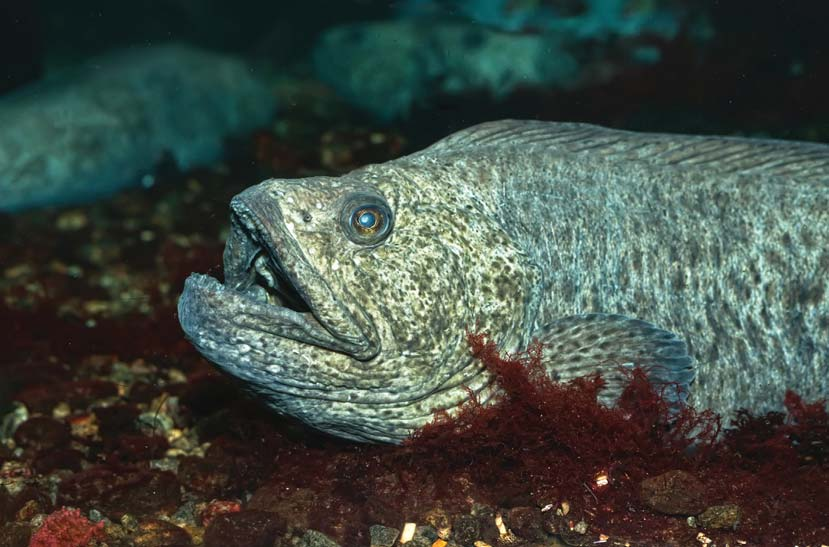
Procesamiento de alimentos y nutrición 1013
Los animales están adaptados a su modo de nutrición
Los animales se clasifi can como herbívoros, carnívoros u omnívoros con base en el tipo de alimentos que suelen comer ( FIGURA 47-1 ). Para cada tipo de alimentación han evolucionado muchas adaptaciones. Por ejemplo, los picos de las aves y los dientes de muchos vertebrados están especializados en cortar, rasgar, aplastar o masticar alimentos. Los animales que se alimentan directamente de productores se denominan herbívoros , o consumidores primarios. La mayoría de lo que come un herbívoro no es digerido de manera efi caz y se elimina del cuerpo, casi sin ningún cambio, como desecho. Es por esto que los herbívoros deben comer grandes cantidades de alimento para obtener la nutrición que requieren. Muchos herbívoros, por ejemplo: saltamontes, langostas, elefantes y ganado, dedican una parte importante de su existencia a comer. Los animales no pueden digerir la celulosa de las paredes de las células vegetales, y en ellos han evolucionado muchas adaptaciones para extraer nutrientes del material vegetal que comen. Muchos herbívoros, incluidas termitas, vacas y caballos, tienen una relación simbiótica con bacterias, hongos y otros microorganismos que habitan en sus tractos digestivos. Los rumiantes (ganado, ovejas, ciervos, jirafas) son animales con pezuñas cuyo estómago está dividido en cuatro cámaras. Las bacterias y los protistas simbióticos que viven en las dos primeras cámaras digieren celulosa, separando algo de la molécula en azúcares, que después son usados por el huésped y las bacterias mismas. Las bacterias producen ácidos grasos durante su metabolismo, parte de ellos es absorbida por el animal y sirve como fuente de energía importante. Trozos sólidos de alimento se acumulan para formar un bolo, que es regurgitado hacia la boca del animal, donde se mezcla con saliva y es masticado otra vez. Cuando el bolo es vuelto a tragar, la comida parcialmente digerida es descompuesta aún más. La comida parcialmente digerida pasa hacia la tercera cámara, donde agua y minerales son absorbidos hacia la sangre. La digestión es completada en la cuarta cámara, que corresponde al estómago de los humanos y otros animales que tienen un solo estómago. A veces los herbívoros son comidos por carnívoros , que también pueden comerse unos a otros. Muchos carnívoros (consumidores secundarios y de nivel superior en los ecosistemas) son depredadores, adaptados para capturar y matar presas. Algunos carnívoros aprovechan sus víctimas y las devoran vivas y completas (vea la fi gura 47-1d). Otros paralizan, aplastan o trituran a la presa antes de ingerirla. Algunas adaptaciones para este tipo de alimentación incluyen tentáculos, garras, colmillos, glándulas venenosas y dientes. Los mamíferos carnívoros tienen dientes caninos bien desarrollados para herir a su presa durante el combate. Las hienas manchadas, que son excelentes depredadoras y carroñeras, tienen grandes mandíbulas que les permiten consumir todo el cadáver de un elefante, incluyendo huesos y piel. Se desperdician pocos nutrientes. La carne se digiere más fácilmente que la comida vegetal y los tractos digestivos de los carnívoros son más cortos que los de los herbívoros. Los omnívoros , como cerdos, humanos, la mayoría de los osos y algunos peces, consumen plantas y animales. Las lombrices ingieren grandes cantidades de tierra que contiene material tanto animal como vegetal. Al nadar, la ballena azul, el animal más grande, fi ltra diminutas algas y animales presentes en el agua. Los omnívoros a menudo tienen adaptaciones que les ayudan a distinguir entre una amplia gama de olores y sabores, por lo tanto seleccionan una variedad de alimentos.
las duras conchas de su presa. También tiene dientes aserrados en la garganta. La nutrición ha sido una fuerza importante en la evolución humana. A través de la selección natural, la dieta humana se volvió más variada que las de otros primates. Los humanos también se volvieron más efi caces para obtener alimentos. Su dieta de mayor calidad sustentó la evolución de un cerebro más grande y complejo. Con sólo unas cuantas variaciones, todos los animales requieren los mismos nutrientes básicos: carbohidratos, lípidos, proteínas, vitaminas y minerales. Los tres primeros se usan como fuentes de energía. Comer demasiado de cualquiera de estos nutrientes puede resultar en aumento de peso, mientras que comer muy pocos nutrientes o seguir una dieta no balanceada puede resultar en desnutrición y muerte. La desnutrición , o estado nutricional defi ciente, resulta de la ingesta alimentaria que está por abajo o por arriba de las necesidades requeridas. En poblaciones humanas, tanto la desnutrición (en particular la defi ciencia de proteínas) como la obesidad (que resulta de la alimentación en exceso) son graves problemas de salud. El procesamiento de alimentos y la nutrición son áreas de investigación activas.
47.1 ESTILOS Y ADAPTACIONES NUTRICIONALES
OBJETIVO DE APRENDIZAJE
1 Describir el procesamiento de alimentos, que incluye la ingestión, digestión, absorción y egestión o eliminación, y comparar el sistema digesti vo de un cnidario (como la hidra) con el de una lombriz de tierra y un vertebrado.
La alimentación es la selección, adquisición e ingestión de comida. Muchos animales tienen un sistema digestivo que procesa los alimentos que comen. La ingestión es el proceso de llevar alimentos a la cavidad digestiva. En muchos animales, entre ellos los vertebrados, la ingestión incluye introducir alimentos en la boca y tragarlos. El proceso de descomponer los alimentos se denomina digestión . Puesto que los animales comen las macromoléculas elaboradas por y para otros organismos, deben descomponer estas moléculas y sintetizar nuevas macromoléculas para sus propias necesidades. Por ejemplo, los humanos no pueden incorporar las proteínas y otros compuestos orgánicos de una hamburguesa directamente en sus propias células. Deben digerir mecánicamente la carne y luego digerirla químicamente por hidrólisis enzimática (vea el capítulo 3). Durante la digestión, compuestos orgánicos complejos son degradados en componentes moleculares más pequeños. Por ejemplo, las proteínas se descomponen en los aminoácidos que las constituyen. Más tarde, estos aminoácidos son utilizados para sintetizar proteínas adaptadas a las necesidades de esa persona en ese momento particular. Los aminoácidos y otros nutrientes pasan por el revestimiento del sistema digestivo y hacia la sangre por absorción . Luego, el sistema circulatorio transporta los nutrientes a todas las células del cuerpo, las cuales los usan para sintetizar proteínas y otros compuestos orgánicos, o como combustible para la respiración celular. Los alimentos que no son digeridos y absorbidos son desechados del cuerpo, un proceso denominado egestión o eliminación .
1014 Capítulo 47
Algunos animales se alimentan de fl uidos por perforación y succión. Los mosquitos tienen estructuras altamente adaptadas para perforar la piel y succionar la sangre. Los murciélagos que se alimentan de néctar tienen una lengua larga y dentición reducida (número de dientes). Las aves que se alimentan de polen y néctar tienen picos y lenguas largas. La forma, el tamaño y la curva del pico pueden estar especializados para alimentarse o capturar un tipo de alimento particular (vea la fi gura 1-11).
Los animales también pueden clasifi carse según los mecanismos que usan para alimentarse. Muchos omnívoros son fi ltradores que eliminan partículas de alimento suspendidas en el agua donde habitan. Por ejemplo, las almejas y las ostras atrapan partículas de alimento suspendidas en la mucosidad secretada por sus branquias. Algunos equinodermos atrapan partículas de alimento a lo largo de sus tentáculos, que están recubiertos por mucosidad. Las ballenas barbadas usan fi las de placas duras (barbas) suspendidas del techo de la boca para fi ltrar pequeños crustáceos.
- Adaptación poco común de un insecto que come bellotas. El “hocico” impresionantemente largo del gorgojo herbívoro que se alimenta de bellotas ( Curculio sp. ) está adaptado para alimentarse de la bellota y hacer un hoyo en ella, donde deposita un huevo. Cuando nace, la larva se alimenta del contenido de la semilla de la bellota.
Darwin Dale/Photo Researchers, Inc.
- Un oso herbívoro. Los grandes dientes planos y las bien desarrolladas mandíbulas y músculos mandibulares del oso panda gigante ( Ailuropoda melanoleuca ) son adaptaciones para moler alimentos vegetales con alto contenido de fibras.
Tom McHugh/Photo Researchers Inc.
- Pez carnívoro. La boca ( a la izquierda ) del pez mariposa de nariz larga ( Forcipiger longirostris ) está adaptada para extraer pequeños gusanos y crustáceos de minúsculos puntos en arrecifes de coral.
Carmela Lesczynski/Animals Animals/Earth Scenes
- Las serpientes son carnívoras. Esta serpiente ( Dromicus sp. ) está estrangulando una lagartija de la lava ( Tropidurus sp. ). Una serpiente puede engullir presas bastante grandes debido a la estructura de sus mandíbulas. La muy flexible mandíbula inferior se expande durante la ingestión.
Frans Lanting/Minden Pictures
FIGURA 47-1 Adaptaciones para obtener y procesar alimentos
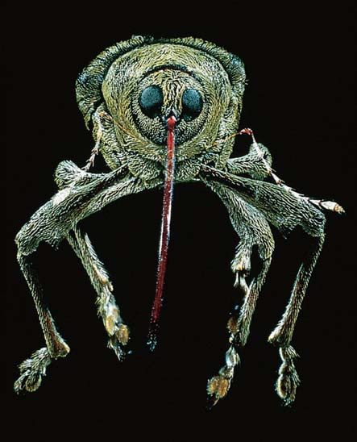
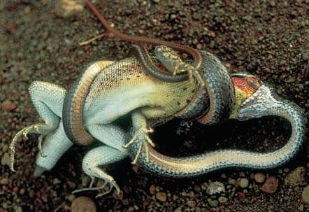
Procesamiento de alimentos y nutrición 1015
teínas. La digestión continúa intracelularmente dentro de las vacuolas digestivas y los nutrientes digeridos se difunden hacia otras células. Las contracciones del cuerpo promueven la expulsión de las partículas de alimento no digeridas a través de la boca. Los platelmintos de vida libre comienzan a digerir a su presa incluso antes de ingerirla. Extienden la faringe a través de su boca y secretan enzimas digestivas sobre su presa ( FIGURA 47-2b ). Luego de ser ingerido, el alimento entra a la cavidad gastrovascular ramifi cada, donde las enzimas continúan digiriéndola. Las células que revisten la cavidad gastrovascular fagocitan fragmentos de alimento parcialmente digeridos, y la digestión se completa dentro de las vacuolas digestivas. Así como en los cnidarios, la cavidad digestiva de los platelmintos tiene una sola abertura, por lo que los desechos no digeridos son expulsados por la boca.
Los sistemas digestivos de la mayoría de los animales tienen dos aberturas
La mayoría de los invertebrados y todos los vertebrados poseen un plano corporal de “tubo dentro de un tubo”. La pared del cuerpo forma el tubo exterior. El tubo interior es un sistema digestivo con dos aberturas, el cual algunas veces se conoce como sistema digestivo completo ( FIGURA
47-3 ). El alimento entra por la boca y la comida no digerida es eliminada por el ano. Los movimientos de mezcla y propulsión del sistema digestivo se denominan motilidad . La actividad de propulsión característica de la mayoría de las regiones del sistema digestivo es la peristalsis , ondas de contracción muscular que empujan el alimento en una dirección. Es posible tomar más alimentos mientras los alimentos previamente ingeridos están en proceso de digestión y son absorbidos más abajo en el sistema digestivo. En un sistema
Algunos invertebrados tienen una cavidad digestiva con una sola abertura
Las esponjas, invertebrados muy simples, obtienen alimentos al fi ltrar organismos microscópicos del agua circundante. Las células individuales fagocitan las partículas de alimento y la digestión es intracelular dentro de las vacuolas digestivas. Los desechos son expulsados hacia el agua que circula continuamente por el cuerpo de la esponja. La mayoría de los animales tiene una cavidad digestiva. La digestión dentro de una cavidad es más efi caz que la digestión intracelular porque las enzimas digestivas pueden liberarse en un espacio confi nado. Se requiere menos área superfi cial. Los cnidarios (como las hidras y las medusas) y los platelmintos tienen una cavidad gastrovascular , una cavidad digestiva central con una sola abertura. Los cnidarios capturan pequeños peces acuáticos con ayuda de sus células y tentáculos urticantes ( FIGURA
47-2a ). La boca se abre hacia la cavidad gastrovascular. Las células que revisten esta cavidad digestiva secretan enzimas que descomponen las pro-
Tentáculo Boca
Alimento
Cavidad gastrovascular
Gastrodermis
Alimento absorbido
Enzimas secretadas por la gastrodermis (capa interna)
Alimento
Desechos
- Sistema digestivo de una hidra.
Epidermis
- Sistema digestivo de un platelminto.
Enzimas
Revestimiento del intestino
Cavidad gastrovascular
Partículas de alimento
Faringe
Boca
Desechos
Alimento
Alimento absorbido
Desechos
Ano
Intestino
Buche Molleja
Esófago
Faringe
Boca
Alimento
FIGURA 47-3 Sistema digestivo con dos aberturas La lombriz de tierra, como la mayoría de los animales, tiene un sistema digestivo completo que va de la boca al ano. Varias regiones del sistema digestivo están especializadas en realizar diferentes funciones de procesamiento de alimento.
FIGURA 47-2 Animada Sistemas digestivos de invertebrados simples Los (a) hidras y los (b) gusanos planos (planarios) tienen una cavidadad gastrovascular, un tracto digestivo con una abertura simple que sirve como boca y como ano.
▲
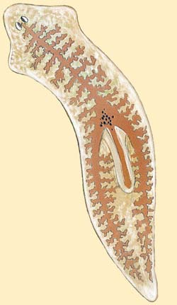
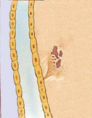
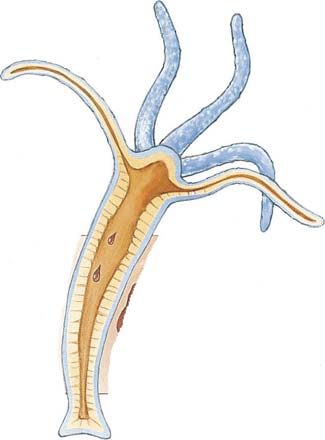
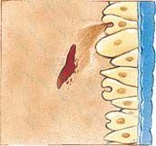
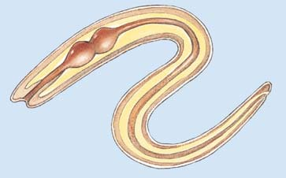
1016 Capítulo 47
4 Describir las adaptaciones estructurales que incrementan el área superfi cial del sistema digestivo. 5 Comparar la absorción de lípidos con la absorción de otros nutrientes.
Varias regiones del sistema digestivo de los vertebrados están especializadas en realizar funciones específi cas ( FIGURA 47-4 ). El alimento pasa en secuencia por las siguientes regiones especializadas:
boca ¡ faringe (garganta) ¡ esófago ¡ estómago
¡ intestino delgado ¡ intestino grueso ¡ ano
El hígado, el páncreas y las glándulas salivales (en los vertebrados terrestres) son glándulas accesorias que secretan jugos gástricos en el sistema digestivo. La pared del sistema digestivo consta de cuatro capas. Aunque varias regiones difi eren de alguna manera en la estructura, las capas son básicamente semejantes en todo el tracto digestivo ( FIGURA 47-5 ). La mucosa , que consta de una capa de tejido epitelial y tejido conectivo subyacente, reviste el lumen (espacio interior) del sistema digestivo. En el estómago y en el intestino, la mucosa está bastante plegada para incre-
digestivo con dos aberturas, varias regiones del tubo están adaptadas para llevar a cabo funciones específi cas.
Repaso
■ ¿Cómo están adaptados los carnívoros a su modo de nutrición?
■ ¿En qué difi ere el procesamiento de alimentos entre lombrices y platelmintos?
■ ¿Cuáles son las ventajas de un sistema digestivo con dos aberturas?
47.2 EL SISTEMA DIGESTIVO DE LOS VERTEBRADOS
OBJETIVOS DE APRENDIZAJE
2 Seguir la vía que una carne ingerida recorre a través del sistema digestivo humano y describir la estructura y función de cada órgano implicado. 3 Seguir paso a paso la digestión de los carbohidratos, proteínas y lípidos.
Glándula salival parótida Glándula salival sublingual
Glándula salival submandibular
Estómago
Duodeno
Páncreas
Colon transverso
Yeyuno
Colon descendente
Colon sigmoide
Recto
Ano
Faringe
Esófago
Hígado
Vesícula
Colon ascendente
Íleo
Ciego
Apéndice vermiforme
FIGURA 47-4 Animada Sistema digestivo humano El sistema digestivo humano es un largo tubo enrollado que se extiende de la boca al ano. El intestino delgado consta del duodeno, el yeyuno y el íleo. El intestino grueso incluye el ciego, el colon, el recto y el ano. Ubique los tres tipos de glándulas accesorias: el hígado, el páncreas y las glándulas salivales.
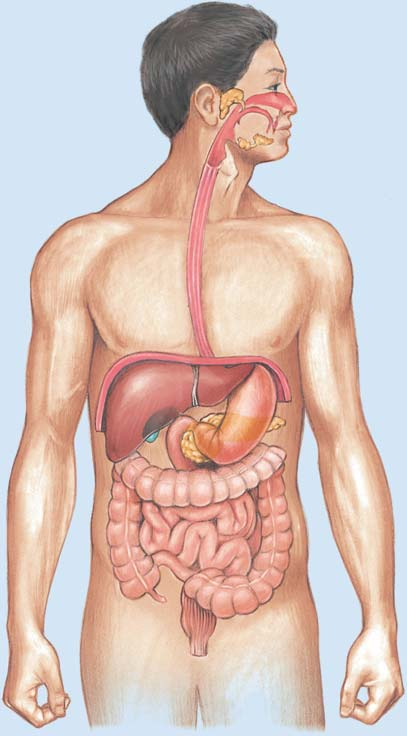
Procesamiento de alimentos y nutrición 1017
(Recuerde del capítulo 43 que las papilas gustativas están localizadas sobre la lengua y otras superfi cies de la boca). Tres pares de glándulas salivales secretan cada día alrededor de un litro de saliva hacia la cavidad bucal. La saliva contiene una enzima, la amilasa salival, que empieza la digestión química de almidón en azúcar.
La faringe y el esófago conducen alimentos al estómago
Después de haber sido masticado y convertido en una masa denominada bolo alimenticio, el trozo de alimento es tragado; movido por la faringe
mentar la superfi cie de secreción y absorción. Alrededor de la mucosa se encuentra la submucosa , una capa de tejido conectivo rico en vasos sanguíneos, vasos linfáticos y nervios. Una capa muscular , que consta de dos subcapas de músculo liso, rodea la submucosa. En la subcapa interior, las fi bras musculares están dispuestas circularmente alrededor del tubo digestivo. En la capa exterior, las fi bras musculares están dispuestas longitudinalmente. Por debajo del nivel del diafragma, el recubrimiento de tejido conectivo exterior del sistema digestivo se denomina peritoneo visceral , que está conectado a través de varios pliegues con el peritoneo parietal , una hoja de tejido conectivo que reviste las paredes de las cavidades abdominal y pélvica. Los peritoneos visceral y parietal encierran parte del celoma, la cavidad peritoneal . La infl amación del peritoneo, denominada peritonitis , puede ser muy grave porque la infección puede difundirse a lo largo del peritoneo hacia la mayoría de los órganos abdominales.
El procesamiento de alimentos empieza en la boca
Imagine que ha dado una gran mordida a una hamburguesa en un pan. La boca está especializada en la ingestión y en comenzar el proceso digestivo. La digestión mecánica empieza al morder, moler y masticar la carne y el pan con los dientes. A diferencia de los sencillos y agudos dientes de los peces, anfi bios y reptiles, los dientes de los mamíferos varían en forma y tamaño y están especializados en realizar funciones específi cas. Los incisivos en forma de cincel se usan para morder y cortar los alimentos, mientras que los largos y agudos caninos están adaptados para perforar a la presa y rasgar los alimentos ( FIGURA 47-6 ). Las superfi cies planas de los premolares y los molares están especializadas en aplastar y moler. Cada diente está cubierto por esmalte , la sustancia más dura en el cuerpo ( FIGURA 47-7 ). La mayor parte de los dientes consta de dentina , que es similar al hueso en composición y dureza. La cavidad de la pulpa , que está por debajo de la dentina, es un tejido conectivo suave que contiene vasos sanguíneos, vasos linfáticos y nervios. Mientras los alimentos son desintegrados mecánicamente por los dientes, son humedecidos por la saliva. A medida que algunas de las moléculas de los alimentos se disuelven, es posible probar la comida.
PERITONEO VISCERAL
Nódulo linfático
Fibras circulares interiores Fibras longitudinales exteriores CAPA MUSCULAR
Vellosidades
Vasos sanguíneos
SUBMUCOSA
Fibras nerviosas MUCOSA
FIGURA 47-5 Pared del sistema digestivo De adentro hacia afuera, las capas de la pared son: la mucosa, la submucosa, la capa muscular y el peritoneo visceral.
Los dientes de un animal están adaptados para su modo de nutrición.
Incisivos
Caninos Premolares Molares
Incisivos
Molares
Carnívoro. El cráneo de un coyote muestra los incisivos y caninos agudos, adaptaciones para desgarrar carne.
Herbívoro. Los caballos y otros herbívoros tienen incisivos (y algunas veces caninos) adaptados para cortar trozos de vegetación. Algunos herbívoros carecen de caninos. Las amplias superficies rugosas de los molares están adaptadas para moler material vegetal.
Omnívoro. Los dientes de los humanos y otros omnívoros están adaptados para masticar una variedad de alimentos.
Molares
Caninos
Incisivos
Premolares
Premolares
Canino
FIGURA 47-6 Los dientes y la dieta
PUNTO CLAVE
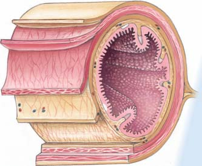
1018 Capítulo 47
El estómago está revestido por un simple epitelio columnar que secreta grandes cantidades de moco. Hoyos minúsculos indican las entradas hacia los millones de glándulas gástricas , que se extienden profundamente hacia el estómago. Las células parietales en las glándulas gástricas secretan ácido clorhídrico y factor intrínseco, una sustancia necesaria para la absorción adecuada de la vitamina B 12 . Las células principales en las glándulas gástricas secretan pepsinógeno , un precursor de
hacia el esófago . La faringe, o garganta, es un tubo muscular que funciona como el pasadizo entre el sistema respiratorio y el sistema digestivo. Al tragar, un pequeño apéndice de tejido, la epiglotis , cierra el paso hacia la vía respiratoria. Ondas de peristalsis barren el bolo por la faringe y esófago hacia el estómago ( FIGURA 47-8 ). Fibras musculares circulares en la pared del esófago se contraen alrededor de la parte superior del bolo y lo empujan hacia abajo. Casi al mismo tiempo, músculos longitudinales alrededor de la parte inferior del bolo y por abajo de él lo contraen, con lo cual el tubo se acorta. Cuando el cuerpo está erguido, la fuerza de gravedad ayuda a mover el alimento por el esófago, aunque esta fuerza no es esencial. Los astronautas pueden comer en su ausencia, e inclusive si una persona está parada de cabeza, el alimento llega a su estómago.
El alimento es digerido mecánica y enzimáticamente en el estómago
La entrada al gran estómago muscular suele estar cerrada por un anillo de múscu lo en el extremo inferior del esófago. Cuando una onda peristáltica pasa por el esófago, el músculo se relaja y el bolo entra al estómago ( FIGU-
RA 47-9 ). Cuando el estómago está vacío, se colapsa y asume una forma semejante a una salchicha. Los pliegues de la pared estomacal, denominados pliegues , otorgan al revestimiento interior un aspecto arrugado. A medida que entra el alimento, los pliegues se vuelven gradualmente lisos, lo que expande la capacidad del estómago a más de un litro.
Esmalte Encía
Cavidad de la pulpa
Pulpa
Dentina
Cemento Canal de la raíz
Hueso esponjoso
Nervio
Vena
Arteria (b) Radiografía de un diente sano. (a) Molar inferior humano. Sección sagital que muestra la corona, el cuello y la raíz.
Corona
Cuello
Raíz
FIGURA 47-7 Estructura del diente
Esófago
Bolo alimenticio
Los músculos longitudinales se contraen, acortando el pasadizo adelante del bolo
Capa de músculo relajado
Esfínter cerrado
Estómago Estómago
Capa de músculo relajado Los músculos circulares se contraen, reduciendo el pasadizo y empujando el bolo hacia delante
Esfínter abierto
1 2 Un bolo es movido por el esófago por contracciones peristálticas.
Cuando el esfínter (anillo de músculo) en la entrada del estómago se abre, el alimento entra en él.
a
FIGURA 47-8 Animada Peristalsis
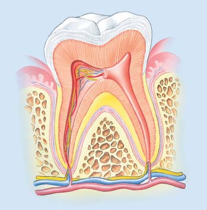
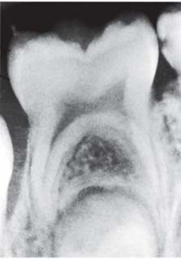
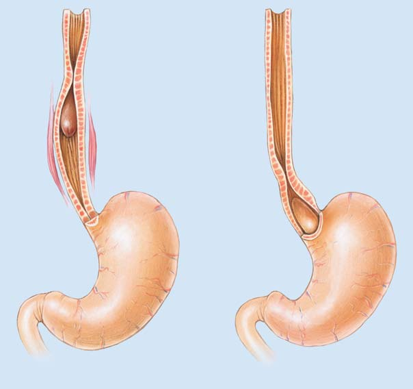
Procesamiento de alimentos y nutrición 1019
nas veces en la parte inferior del esófago. La bacteria Helicobacter pylori ha sido implicada como factor causante de úlceras (vea la fi gura 25-13). La Helicobacter pylori infecta las células secretoras de moco del revestimiento del estómago, disminuyendo el moco protector, lo cual puede conducir a úlceras pépticas o cáncer. Este tipo de infección responde a terapia con antibióticos. ¿Qué cambios ocurren en una mordida de hamburguesa durante su permanencia de 3 a 4 horas en el estómago? El estómago se agita y degrada químicamente el alimento, por lo que éste asume la consistencia de una sopa espesa; el alimento parcialmente digerido se denomina quimo. La digestión de proteínas degrada a continuación la mayor parte de las proteínas de la hamburguesa a polipéptidos. La digestión del almidón en el pan en pequeños polisacáridos y maltosa continúa hasta que la amilasa salival es inactivada por el pH ácido del estómago. Durante un período de varias horas, las ondas peristálticas liberan el quimo en chorros hacia la salida del estómago, el píloro , y hacia el intestino delgado.
enzima inactivo. Cuando entra en contacto con el jugo gástrico ácido en el estómago, el pepsinógeno se convierte en pepsina, la enzima digestiva más activa del estómago. La pepsina hidroliza las proteínas, convirtiéndolas en polipéptidos cortos. Varios mecanismos de protección impiden que el jugo gástrico digiera la pared del estómago. Las células de la mucosa gástrica secretan un moco alcalino que recubre la pared estomacal y neutraliza la acidez del jugo gástrico a lo largo del revestimiento. Además, las células epiteliales del revestimiento se ajustan estrechamente entre sí, evitando que el jugo gástrico se fi ltre entre ellas y hacia el tejido subyacente. Si algunas de las células epiteliales se dañan, son remplazadas rápidamente. De hecho, ¡alrededor de medio millón de estas células se pierde y es sustituido cada minuto! Algunas veces estos mecanismos de protección funcionan mal y parte del revestimiento del estómago es digerido, dejando una herida abierta o úlcera péptica . Estas úlceras ocurren en el duodeno y algu-
La estructura del estómago está adaptada para su función de digerir alimentos; las glándulas gástricas en su mucosa secretan jugos digestivos y tres capas de músculo en la pared del estómago son importantes para digerir mecánicamente los alimentos.
Esfínter pilórico
Capa de músculo oblicuo
Aberturas hacia las glándulas gástricas
Epitelio
Nódulo linfático
Capa de músculo longitudinal
Capa de músculo circular
Esfínter
Duodeno Pliegues
Glándulas gástricas
Mucosa gástrica
Esófago
Peritoneo visceral
Núcleos
Célula principal Célula parietal
Epitelio superficial
Células parietales
Glándulas gástricas
Células principales
Glándulas gástricas
FIGURA 47-9 Estructura del estómago El estómago está adaptado para digerir alimentos tanto mecánica como enzimáticamente. (a) La pared del estómago ha sido removida de manera progresiva para mostrar las capas de músculo y los pliegues. (b) Revestimiento del estómago y glándulas gástricas.
PUNTO CLAVE
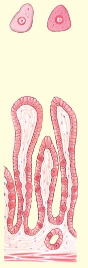
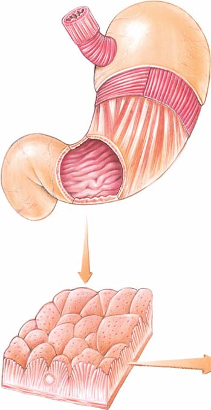
1020 Capítulo 47
deno, las cuales actúan sobre el quimo. Luego, enzimas producidas por las células epiteliales que revisten el duodeno catalizan los pasos fi nales en la digestión de los tipos de nutrientes más importantes. El revestimiento del intestino delgado se ve aterciopelado debido a sus millones de diminutas proyecciones semejantes a dedos, las vellosidades intestinales ( FIGURA 47-10 ). Éstas aumentan el área superfi cial del intestino delgado para la digestión y absorción de nutrientes. La superfi cie interna del intestino es incrementada aún más por microvellosidades , proyecciones de la membrana plasmática de las células epiteliales
La mayor parte de la digestión enzimática se lleva a cabo en el intestino delgado
La digestión de alimentos es completada en el intestino delgado y los nutrientes son absorbidos a través de su pared. El intestino delgado, que mide entre 5 y 6 m de longitud, consta de tres regiones: el duodeno , el yeyuno y el íleo . La mayor parte de la digestión química se lleva a cabo en el duodeno, la primera porción del intestino delgado, y no en el estómago. Bilis del hígado y enzimas del páncreas se liberan hacia el duo-
El área superfi cial digestiva y absorbente del intestino delgado aumenta bastante por los millones de vellosidades semejantes a dedos; el área superfi cial es incrementada aún más por microvellosidades sobre las células epiteliales de las vellosidades.
Sección transversal microscópica de la porción del yeyuno de la pared del intestino delgado mostrando vellosidades
Vellosidades. Ampliación de una pequeña porción de la pared intestinal. Algunas de las vellosidades han sido abiertas para mostrar los vasos sanguíneos y linfáticos en su interior.
Microvellosidades. Micrografía MEB de la superficie de una célula epitelial del revestimiento del intestino delgado que muestra las microvellosidades. El epitelio ha sido cortado verticalmente, permitiendo que las microvellosidades puedan ser vistas desde un lado y desde arriba.
Capa muscular
Células epiteliales que revisten las vellosidades
Red capilar
Fibra nerviosa
Vaso lactífero
Vellosidades
Aberturas de las glándulas intestinales
Células de Goblet Glándulas intestinales
Vaso linfático
Peritoneo visceral
Mucosa
Submucosa
1 μ m
© Jubal Harshaur
Cortesía de J. D. Hoskings, W. G. Henk, y Y. Z. Abdelbaki, American Journal of Veterinary Research, 1982, Vol. 43, No. 10, pp. 1715–1720
FIGURA 47-10 Vellosidades y microvellosidades
PUNTO CLAVE
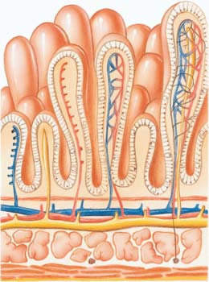
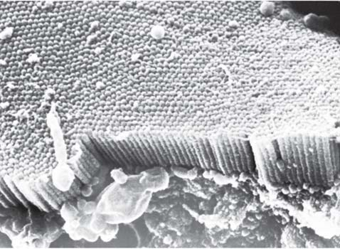
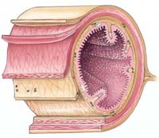
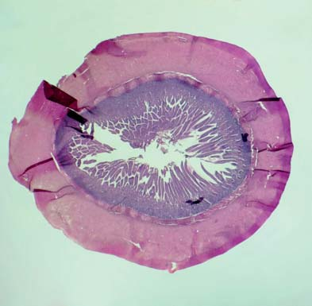
Procesamiento de alimentos y nutrición 1021
Los carbohidratos son digeridos en monosacáridos
Los polisacáridos, como almidón y glicógeno, son componentes importantes de los alimentos ingeridos por la mayoría de los animales. Las unidades de glucosa de estas grandes moléculas están conectadas por enlaces glicosídicos que unen el carbono 4 (o 6) de una molécula de glucosa con el carbono 1 de la molécula de glucosa adyacente. Estos enlaces son hidrolizados por amilasas que digieren los polisacáridos en la maltosa disacárida. Aunque la amilasa puede separar los enlaces α-glicosídicos presentes en el almidón y el glicógeno, no puede hacerlo con los enlaces β-glicosídicos presentes en la celulosa (vea las fi guras 3-9 y 3-10). La amilasa no puede romper el enlace entre las dos unidades de glucosa de la maltosa. Las enzimas producidas por las células que revisten el intestino delgado descomponen los disacáridos como la maltosa en monosacáridos. Por ejemplo, la maltasa divide la maltosa en dos moléculas de glucosa (vea la fi gura 3-8a). La hidrólisis ocurre mientras los disacáridos son absorbidos a través del epitelio del intestino delgado.
Las proteínas son digeridas en aminoácidos
Varias enzimas proteolíticas son secretadas hacia el sistema digestivo. Cada una rompe enlaces peptídicos en una o más ubicaciones específi cas en una cadena de polipéptidos. La tripsina, secretada en una forma inactiva por el páncreas, es activada por una enzima denominada enteroquinasa . Luego, la tripsina activa la quimiotripsina y la carboxipeptidasa, así como tripsina adicional. La pepsina, la tripsina y la quimiotripsina rompen ciertos enlaces peptídicos internos de las proteínas y los polipéptidos. La carboxipeptidasa elimina aminoácidos con grupos carboxilo libres y terminales del extremo de las cadenas polipeptídicas. Luego, las dipeptidasas liberadas por el duodeno separan los pequeños péptidos en aminoácidos.
columnares simples de las vellosidades. Alrededor de 600 microvellosidades sobresalen de la superfi cie expuesta de cada célula, otorgando al revestimiento epitelial una apariencia borrosa cuando se ven con un microscopio óptico. Si el revestimiento intestinal fuese liso, como el interior de un tubo para agua, los alimentos se deslizarían por el intestino, por lo que muchos nutrientes valiosos no serían digeridos o absorbidos. Los pliegues en la pared del intestino, las vellosidades, junto con las microvellosidades incrementan el área superfi cial aproximadamente 600 veces. Si fuese posible desplegar y extender el revestimiento del intestino delgado de un adulto humano, su superfi cie sería casi igual a la de una cancha de tenis.
El hígado secreta bilis
El hígado , el órgano interno de mayor tamaño y también uno de los más complicados en el cuerpo, se encuentra en la parte superior derecha del abdomen, justo bajo el diafragma ( FIGURA 47-11 ). El hígado secreta bilis , que digiere mecánicamente las grasas por medio de una acción semejante a la de un detergente (que se analiza en una sección posterior). La bilis consta de agua, sales biliares, pigmentos biliares, sales y lecitina (un fosfolípido). Puesto que no contiene enzimas digestivas, la bilis no digiere enzimáticamente los alimentos. La vesícula biliar , en forma de pera, almacena y concentra la bilis y la libera hacia el duodeno a medida que se necesita. ¡Una sola célula del hígado puede realizar más de 500 actividades metabólicas especializadas por separado! El hígado lleva a cabo estas funciones vitales:
- Secreta bilis que digiere mecánicamente las grasas. 2. Ayuda a mantener la homeostasis al eliminar o añadir nutrientes a la sangre. 3. Transforma el exceso de glucosa en glucógeno y lo almacena. 4. Convierte el exceso de aminoácidos en ácidos grasos y urea. 5. Almacena hierro y ciertas vitaminas. 6. Desintoxica del alcohol y otras drogas y venenos.
El páncreas secreta enzimas digestivas
El páncreas es una glándula alargada que secreta tanto enzimas digestivas como hormonas que ayudan a regular el nivel de glucosa en la sangre. Las células que revisten los conductos pancreáticos secretan una solución alcalina rica en iones bicarbonato. Este jugo pancreático neutraliza la acidez estomacal en el duodeno y proporciona el pH óptimo para la acción de las enzimas pancreáticas. Las enzimas pancreáticas incluyen la tripsina y quimiotripsina , que digieren polipéptidos en dipéptidos; la lipasa pancreática, que degrada las grasas; la amilasa pancreática, que descompone casi todos los tipos de carbohidratos complejos, excepto la celulosa, en disacáridos; y la ribonucleasa y desoxirribonucleasa , que dividen el ácido ribonucleico (ARN) y el ácido desoxirribonucleico (ADN) en nucleótidos libres.
Los nutrientes son digeridos a medida que se mueven a lo largo del sistema digestivo
El quimo se mueve por el sistema digestivo por peristalsis, una mezcla de contracciones y movimientos de las vellosidades. A medida que los nutrientes en el quimo se mueven por el intestino delgado, entran en contacto con enzimas que los digieren ( TABLA 47-1 ).
Vena cava inferior
Lóbulo derecho del hígado
Conducto hepático derecho
Conducto biliar común
Vesícula
Estómago
Páncreas
Vena portal hepática
Conducto pancreático
Duodeno
FIGURA 47-11 El hígado y el páncreas La vesícula biliar almacena bilis del hígado. Observe los conductos que transportan bilis hacia la vesícula y el duodeno. El estómago ha sido desplazado para mostrar el páncreas, que secreta varias enzimas digestivas hacia el duodeno.
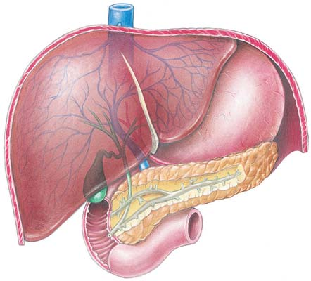
1022 Capítulo 47
Nervios y hormonas regulan la digestión
La mayoría de las enzimas digestivas son producidas sólo cuando hay comida en el sistema digestivo. La secreción de las glándulas salivales es totalmente controlada por el sistema nervioso, pero la secreción de otros jugos gástricos es regulada tanto por nervios como por hormonas. La pared del aparato digestivo contiene densas redes de neuronas. El llamado sistema nervioso entérico continúa regulando muchas actividades motoras y secretoras del sistema digestivo incluso si los nervios simpáticos y parasimpáticos hacia estos órganos están cortados. Muchos neuropéptidos presentes en el cerebro también son liberados por neuronas en el tracto digestivo y ayudan a regular la digestión. Por ejemplo, la sustancia P estimula la contracción de músculo liso del tracto digestivo y la encefalina lo inhibe (vea la tabla 41-2). Varias hormonas, incluidas la gastrina , secretina , colecistoquinina (CCK) y el péptido insulinotrópico dependiente de la glucosa (PIDG) , ayudan a regular el sistema digestivo ( TABLA 47-2 ). Estas hormonas son polipéptidos secretados por células endocrinas en la mucosa de ciertas regiones del tracto digestivo. Los investigadores están estu-
Las grasas son digeridas en ácidos grasos y monoacilgliceroles
Los lípidos suelen ser ingeridos como grandes masas de triacilgliceroles (también conocidos como triglicéridos). Son digeridos principalmente dentro del duodeno por lipasa pancreática. Como muchas otras proteínas, la lipasa es soluble en agua, pero no así sus sustratos. Por tanto, la enzima puede atacar sólo las moléculas de grasa en la superfi cie de una masa de grasa. Las sales biliares actúan como detergentes, reduciendo la tensión superfi cial de las grasas. Su acción, denominada emulsifi cación , rompe grandes masas de grasa en gotas más pequeñas. La emulsifi cación incrementa bastante el área superfi cial de la grasa expuesta a la acción de la lipasa pancreática, aumentando así la velocidad de digestión de los lípidos. Las condiciones en el intestino no suelen ser óptimas para la hidrólisis completa de lípidos en glicerol y ácidos grasos. En consecuencia, los productos de la digestión de lípidos incluyen monoacilgliceroles (monoglicéridos) y diacilgliceroles (diglicéridos), así como glicerol y ácidos grasos. Los triacilgliceroles no digeridos también permanecen, algunos de los cuales son absorbidos sin digestión.
Resumen de la digestión
Carbohidratos Proteínas Lípidos
Boca Polisacáridos
¡
Amilasa salival
Maltosa y polisacáridos pequeños
Estómago Su acción continúa hasta que el pH Proteína
ácido inactiva la amilasa salival
¡
Pepsina
Polipéptidos cortos
Intestino delgado Polisacáridos no digeridos Polipéptidos Gotita de grasa
¡
Amilasa pancreática
¡
Tripsina, quimiotripsina
¡
Sales biliares
Maltosa y otros disacáridos Polipéptidos y péptidos cortos Gotitas de grasa emulsionadas Maltasa, sacarasa, Carboxipeptidasa, Lipasa
¡
lactasa
¡
peptidasas, dipeptidasas
¡
pancreática Monosacáridos Aminoácidos Ácidos grasos y glicerol
TABLA 47-1
Algunas hormonas que regulan la digestión
Hormona Fuente Tejido objetivo Acciones Factores que estimulan la liberación
Gastrina Estómago (mucosa) Estómago Estimula las glándulas gástricas Distensión del estómago por los alimentos; (glándulas gástricas) para secretar pepsinógeno y HCl; ciertas sustancias como proteínas estimula la motilidad gástrica parcialmente digeridas y cafeína
Secretina Duodeno (mucosa) Páncreas Señala la secreción Quimo ácido que actúa sobre de bicarbonato de sodio la mucosa del duodeno
Hígado Estimula la secreción de bilis
Estómago Inhibe la secreción gástrica
Colecistoquinina Duodeno (mucosa) Páncreas Estimula la liberación de enzimas Presencia de ácidos grasos y proteínas (CCK) digestivas parcialmente digeridas en el duodeno
Vesícula biliar Estimula el vaciado de bilis
Cerebro Señala la saciedad
Péptido insulinotróDuodeno (mucosa) Páncreas Estimula la secreción de insulina Presencia de glucosa en el duodeno pico dependiente de la glucosa (PIDG)
TABLA 47-2
Procesamiento de alimentos y nutrición 1023
El intestino grueso elimina los desechos
El material no digerido, como la celulosa de los alimentos vegetales, junto con el quimo no absorbido, pasa al intestino grueso (vea la fi gura 47-4). Aunque sólo mide alrededor de 1.3 m, esta parte del sistema digestivo se denomina “grueso” porque su diámetro es mayor que el del intestino delgado. El intestino delgado se une al intestino grueso en alrededor de 7 cm del extremo del intestino grueso, formando un saco cerrado: el ciego . El apéndice vermiforme se proyecta desde el extremo del ciego. (La apendicitis es una infl amación del apéndice). Herbívoros como los conejos poseen un gran ciego funcional que mantiene los alimentos mientras las bacterias digieren su celulosa. En los humanos, las funciones del ciego y del apéndice se ignoran, y estas estructuras suelen considerarse como órganos vestigiales. Desde el ciego hasta el recto (la última porción del intestino grueso), el intestino grueso se conoce como colon . Las regiones del intestino grueso son: ciego, colon ascendente, colon transverso, colon descendente, colon sigmoide, recto y ano , la apertura para eliminar desechos. En la medida en que el quimo pasa lentamente por el intestino grueso, de él se absorben agua y sodio, y gradualmente asume la consistencia de las heces normales. Las bacterias que habitan el intestino grueso son alimentadas por los últimos remanentes de los alimentos; a cambio, benefi cian a su huésped al producir vitamina K y ciertas vitaminas B que pueden ser absorbidas y usadas. Es necesario hacer una distinción entre eliminación y excreción. La eliminación o egestión es el proceso de deshacerse de desechos digestivos: materia que no ha sido absorbida del sistema digestivo y no participó en las actividades metabólicas. En contraste, la excreción es el proceso de deshacerse de desechos metabólicos, lo cual en los mamíferos es principalmente la función de los riñones y pulmones. Sin embargo, el intestino grueso, excreta pigmentos biliares. Cuando el quimo pasa por el intestino demasiado rápido, la defecación (expulsión de heces) se vuelve más frecuente y las heces son acuosas. Esta condición, denominada diarrea , puede ser ocasionada por la ansiedad, ciertos alimentos o patógenos que irritan el revestimiento intestinal. Una diarrea prolongada resulta en pérdida de agua y sales y conduce a la deshidratación; una condición grave, especialmente en infantes. El estreñimiento resulta cuando el quimo pasa por el intestino muy lentamente. Debido a que se elimina más agua del quimo, las heces pueden ser duras y secas. El estreñimiento es ocasionado a menudo por una dieta defi ciente en fi bra. El cáncer colorrectal ocurre en el colon o recto ( FIGURA 47-12 ). En los países occidentales, el cáncer colorrectal es el tercer tipo de cáncer más común y en Estados Unidos es la segunda causa más importante de fallecimiento por cáncer. Varios factores contribuyen al riesgo de desarrollar cáncer de colon, entre ellos se incluye la historia familiar, ciertos factores genéticos, fumar, inactividad física, abuso de alcohol y obesidad. Una dieta abundante en carne roja y procesada, y baja en fruta fresca, verduras, aves de corral y pescado parece incrementar el riesgo.
Repaso
■ Suponga que está comiendo un sándwich de pollo. Enumere la secuencia de las estructuras por las que pasa un bocado en su camino por el sistema digestivo. ¿Qué ocurre en cada estructura?
■ ¿Cuál es la función de las vellosidades? ¿Cómo funcionan?
■ ¿Cuál es la función del páncreas?
■ ¿Qué son los quilomicrones?
diando varios otros péptidos mensajeros que son importantes en la regulación de la actividad digestiva. Como un ejemplo de la regulación del sistema digestivo, considere la secreción de jugo gástrico. Ver, oler, probar o inclusive pensar en comida provoca que el cerebro envíe señales neuronales a las glándulas gástricas en el estómago. Estas señales estimulan a esas glándulas para que secreten jugo gástrico. Además, cuando los alimentos distienden al estómago, receptores de dilatación envían señales neuronales a la médula. Luego, la médula envía mensajes a las células endocrinas en la pared del estómago que secretan gastrina. Esta hormona es absorbida hacia la sangre; estimula al estómago para liberar jugo gástrico y también estimula el vaciado gástrico y la motilidad intestinal.
La absorción se lleva a cabo principalmente por medio de las vellosidades del intestino delgado
Sólo pocas sustancias, agua, azúcares simples, alcohol y algunas drogas, son lo sufi cientemente pequeñas para ser absorbidas a través de la pared del estómago. La absorción de nutrientes es principalmente tarea de las vellosidades intestinales. Como se observa en la fi gura 47-10, la pared de una vellosidad es una sola capa de células epiteliales. Dentro de cada vellosidad hay una red de capilares y un vaso linfático central, denominado vaso lactífero o vaso quilífero . Para llegar a la sangre (o linfa), una molécula nutriente debe pasar a través del revestimiento de una célula epitelial que reviste el intestino y a través de una célula que reviste un vaso sanguíneo o linfático. La absorción ocurre por una combinación de difusión simple, difusión facilitada y transporte activo. Debido a que la glucosa y los aminoácidos no pueden difundirse a través del revestimiento intestinal, deben ser absorbidos por transporte activo. La absorción de estos nutrientes está acoplada con el transporte activo de sodio (vea el capítulo 5). La fructosa es absorbida por difusión facilitada. Los aminoácidos y la glucosa son transportados directamente hacia el hígado por la vena portal hepática . En el hígado, la vena se divide en una vasta red de diminutos senos sanguíneos, vasos semejantes a los capilares. A medida que la sangre rica en nutrientes se mueve lentamente por el hígado, los nutrientes y ciertas sustancias tóxicas son eliminados de la circulación. Los productos de la digestión de lípidos son absorbidos por un proceso y ruta diferentes. Una vez que los ácidos grasos y los monoacilgliceroles entran en una célula epitelial en el revestimiento intestinal, vuelven a juntarse como triacilgliceroles en el retículo endoplasmático liso. Los triacilgliceroles, junto con el colesterol absorbido y los fosfolípidos, son empacados en gotitas de grasa cubiertas de proteína, denominadas quilomicrones . Después de que son liberados en el fl uido intersticial, los quilomicrones entran en el vaso quilífero (vaso linfático) de la vellosidad. Los quilomicrones son transportados en la linfa hacia las venas subclavias, donde la linfa y su contenido entran en la sangre. Alrededor de 90% de la grasa absorbida entra en la circulación de la sangre de esta forma indirecta. El resto, principalmente ácidos grasos de cadena corta como los que se encuentran en la mantequilla, es absorbido directamente hacia la sangre. Después de una dieta rica en grasa, la gran cantidad de quilomicrones en la sangre pueden otorgar al plasma un aspecto turbio, lechoso durante algunas horas. Los quilomicrones transportan grasas al hígado y otros tejidos. La mayoría de los nutrientes en el quimo son absorbidos en el momento en que llegan al extremo del intestino delgado. Lo que queda (principalmente desechos) pasa a través del esfínter, la válvula ileocecal , hacia el intestino grueso.
1024 Capítulo 47
Recuerde del capítulo 1 que el metabolismo incluye todos los procesos químicos que se llevan a cabo en el cuerpo. El metabolismo incluye procesos anabólicos y catabólicos. El anabolismo incluye los aspectos sintéticos del metabolismo, como la producción de proteínas y áci dos nucleicos. El catabolismo incluye procesos de descomposición, como la hidrólisis. Los nutriólogos miden el valor energético de los alimentos en kilocalorías, o simplemente Calorías. Una Caloría, escrita con C mayúscu la, denota una kilocaloría (kcal), defi nida como la cantidad de calor necesaria para elevar la temperatura de un kilogramo de agua 1 grado Celsius.
Los carbohidratos proporcionan energía
Los azúcares y almidones son fuentes de energía importantes en la dieta humana. La mayoría de los carbohidratos son ingeridos en la forma de almidón y celulosa, ambos polisacáridos compuestos por largas cadenas de subunidades de glucosa. (Considere conveniente revisar el análisis de los carbohidratos en el capítulo 3). Los nutriólogos se refi eren a los polisacáridos como “ carbohidratos complejos ”. Los alimentos ricos en carbohidratos complejos incluyen arroz, papas, maíz y otros cereales gramíneos. Cuando se come un exceso de alimentos ricos en carbohidratos, las células del hígado se llenan por completo con glicógeno y transforman el exceso de glucosa en ácidos grasos y glicerol. Las células del hígado convierten estos compuestos en triacilgliceroles y los envían a depósitos grasos del cuerpo para su almacenamiento. Los carbohidratos refi nados, como el pan y el arroz blancos, no son saludables porque el proceso de refi nación elimina la fi bra y muchas vitaminas y minerales. El proceso de refi nación también produce una forma de almidón que el sistema digestivo descompone rápidamente en glucosa. El rápido incremento resultante en la concentración de glucosa en la sangre estimula al páncreas a liberar una gran cantidad de insulina. Esta hormona disminuye el nivel de glucosa en la sangre al señalar al hígado y los músculos la eliminación de glucosa de la sangre. Cuando los niveles de glucosa e insulina son altos, los niveles de triacilglicerol suben y la concentración de lipoproteína de alta densidad (LAD, el colesterol bueno) disminuye. Estos eventos metabólicos pueden conducir a enfermedad cardiovascular y a un aumento en el riesgo de padecer diabetes tipo 2 (que se analiza en al capítulo 49). La fi bra dietética disminuye la concentración de colesterol en la sangre y está asociada con un menor riesgo de enfermedad cardiovascular y diabetes. La fi bra es principalmente una mezcla de celulosa y otros carbohidratos indigeribles. La fi bra dietética se obtiene al comer frutas, verduras y granos enteros. La dieta en Estados Unidos es baja en fi bra debido a la escasa ingesta de frutas y verduras y el uso de harina refi nada. Incrementar la fi bra en la dieta ofrece varios benefi cios para la salud. La fi bra estimula la sensación de estar satisfecho (saciedad) después de haber comido, por lo que es útil para tratar la obesidad.
Los lípidos proporcionan energía y se usan para elaborar moléculas biológicas
Las células usan lípidos ingeridos para suministrar energía y para hacer una variedad de compuestos lipídicos, como componentes de membranas celulares, hormonas esteroides y sales biliares. Las personas ingieren alrededor de 98% de los lípidos dietéticos en la forma de triacilgliceroles (triglicéridos). (Recuerde del capítulo 3 que un triacilglicerol es una molécula de glicerol combinada químicamente con tres ácidos grasos; vea la fi gura 3-12b). Los triacilgliceroles pueden estar saturados; es decir, cargados completamente con átomos de hidrógeno, o sus ácidos grasos
47.3 NUTRIENTES REQUERIDOS
OBJETIVOS DE APRENDIZAJE
6 Resumir los requerimientos nutricionales de carbohidratos dietéticos, lípidos y proteínas, y seguir el destino de la glucosa, los lípidos y los aminoácidos después de su absorción. 7 Describir las funciones nutricionales de las vitaminas, los minerales y los fi toquímicos.
Para los procesos metabólicos son necesarias cantidades adecuadas de nutrientes esenciales. Los animales requieren carbohidratos, lípidos, proteínas, vitaminas y minerales. Los nutriólogos están investigando actualmente compuestos vegetales denominados fi toquímicos que son importantes en la nutrición. Aunque el agua no se considera un nutriente en sentido estricto, es un componente dietético necesario. Es necesario ingerir bastante líquido para reemplazar los fl uidos perdidos en la orina, el sudor, las heces y la respiración. Los nutriólogos consideran nuevos datos y continuamente reexaminan las cantidades relativas de varios tipos de nutrientes recomendados para una dieta sana. Según la Dietary Guidelines for Americans del Departamento de Agricultura de Estados Unidos, entre 45% y 65% de las calorías deben provenir de carbohidratos, entre 20% y 35% de la grasa y de 10% a 35% de las proteínas.
Colon transverso
Colon descendente
Colon ascendente
Cáncer
SPL/Photo Researchers, Inc.
FIGURA 47-12 Cáncer de colon En esta radiografía del intestino grueso, el cáncer es evidente como una masa que se proyecta hacia el lumen del colon. El intestino grueso ha sido llenado con una suspensión de sulfato de bario, que hace visibles las irregularidades en la pared.
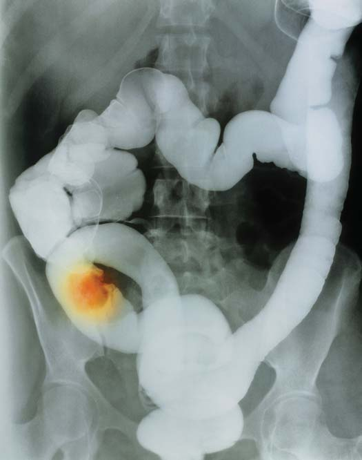
Procesamiento de alimentos y nutrición 1025
una dieta sana, mantener un peso corporal idóneo (la obesidad aumenta los niveles de LBD y de triacilglicerol) y no fumar. En general, los alimentos de origen animal son ricos tanto en grasas saturadas como en colesterol, mientras que la mayoría de los alimentos de origen vegetal contienen grasas no saturadas y están libres de colesterol. La mantequilla contiene muchas grasas saturadas. Los aceites vegetales poliinsaturados de uso común son de maíz, soya y cártamo. Las grasas monoinsaturadas aumentan los niveles de LAD, así como el ácido esteárico, la grasa saturada en el chocolate. Los aceites de oliva, canola y cacahuate contienen grandes cantidades de grasas monoinsaturadas. Los aceites de pocas plantas, incluyendo el aceite de palma y el de coco, son altos en grasas saturadas. Los ácidos grasos omega 3 (que se encuentran en el pescado y algunos aceites vegetales) disminuyen los niveles de LBD y desempeñan otros papeles de protección en la disminución del riesgo de enfermedad cardiaca coronaria. Una dieta alta en grasas saturadas y colesterol aumenta los niveles de colesterol hasta en 25%. Debido a que las grasas poliinsaturadas disminuyen el nivel de colesterol, ahora muchas personas cocinan con aceites vegetales en vez de hacerlo con mantequilla y tocino, beben leche descremada en vez de leche entera, y comen helados bajos en grasa. Algunas personas usan margarina en lugar de mantequilla. Sin embargo, durante el proceso de producción de muchas margarinas, los aceites vegetales son parcialmente hidrogenados (algunos de los carbonos aceptan hidrógeno para volverse totalmente saturados). Durante la hidrogenación, algunos enlaces
pueden estar monoinsaturados (con un solo enlace doble en su molécula) o poliinsaturados (con dos o más enlaces dobles en su molécula). Tres ácidos grasos poliinsaturados (linoleico, linolénico y araquidónico) son ácidos grasos esenciales que los humanos deben tomar de los alimentos. Dados éstos y sufi cientes nutrientes no lipídicos, el cuerpo puede elaborar todos los compuestos lipídicos (incluidos grasas, colesterol, fosfolípidos y prostaglandinas) que requiere. La dieta media en Estados Unidos proporciona por mucho más colesterol que el máximo diario recomendado de 300 mg. Altas fuentes de colesterol incluyen la yema de los huevos, la mantequilla y la carne. ¿Cómo son transportados los lípidos? Recuerde que los quilomicrones transportan lípidos del intestino al hígado y otros tejidos. Cuando los quilomicrones circulan por la sangre, la enzima lipasa lipoproteína descompone los triacilgliceroles. Luego, los ácidos grasos y el glicerol pueden ser tomados por las células. Lo que queda del quilomicrón, un remanente integrado principalmente por colesterol y proteína, es tomado por el hígado. Las células del hígado vuelven a reempacar el colesterol y los triacilgliceroles. Estos lípidos son unidos a proteínas y transportados como grandes complejos moleculares denominados lipoproteínas . Algo de colesterol en plasma es transportado por lipoproteínas de alta densidad , o LAD (el colesterol “bueno”), pero la mayoría es transportada por lipoproteínas de baja densidad , o LBD (el colesterol “malo”). Las LBD entregan el colesterol a las células. Para que éstas tomen a las lipoproteínas de baja densidad, una proteína (apoliproteína B) en la superfi cie de las LBD debe unirse con una proteína receptora de LBD sobre la membrana plasmática (vea la fi gura 5-23). Después de unirse, las LBD entran a la célula, y su colesterol y otros componentes son utilizados. Cuando los niveles de colesterol son altos, las lipoproteínas de alta densidad reúnen el exceso de colesterol y lo transportan al hígado. Las LAD disminuyen el riesgo de sufrir enfermedad cardiovascular. Cuando son necesarias, las grasas almacenadas son hidrolizadas en ácidos grasos y liberados hacia la sangre. Antes de que las células pueden usar estos ácidos grasos como combustible, son desintegrados en compuestos más pequeños y combinados con la coenzima A para formar moléculas de acetil coenzima A (acetil CoA; FIGURA 47-13 ). La acetil CoA entra en el ciclo del ácido cítrico (vea el capítulo 8). La conversión de ácidos grasos en acetil CoA se lleva a cabo en el hígado mediante un proceso denominado oxidación β . Para su transporte a las células, la acetil coenzima A es transformada en uno de tres tipos de cuerpos cetónicos (cetonas de cuatro carbonos). Normalmente el nivel de cuerpos cetónicos en la sangre es bajo, pero en ciertas condiciones anormales, como inanición y diabetes mellitus, el metabolismo de las grasas se incrementa tremendamente. Entonces los cuerpos cetónicos son producidos tan rápidamente que su nivel en la sangre se vuelve excesivo, lo cual puede hacer a la sangre demasiado ácida. Este equilibrio interrumpido del pH puede conducir a la muerte. ¿Cuál es la relación entre la grasa y la ingesta de colesterol y la enfermedad cardiovascular? Los lípidos desempeñan un papel crucial en el desarrollo de la aterosclerosis, una enfermedad progresiva en que las arterias son obstruidas por materia grasa (vea el capítulo 44). Las lipoproteínas de baja densidad son la principal fuente del colesterol que se acumula en las paredes de las arterias. El tipo de grasa consumida, así como otros factores dietéticos y de estilo de vida, son importantes. Una persona puede promover una proporción saludable entre lipoproteínas de alta densidad y lipoproteínas de baja densidad al hacer ejercicio regularmente, seguir
Grasa Célula de grasa
Ácidos grasos + Glicerol
- Glicerol
G3P Entra en la respiración celular
Glucosa
Entra en la respiración celular
Entra en la respiración celular
Convertida en otros lípidos Cuerpos cetónicos
Usados para elaborar triacilgliceroles
Acetil CoA
Ácido graso
Convertido en otros lípidos
Piruvato o acetil CoA
Hígado
Otras células
Transportados en la sangre
FIGURA 47-13 Cómo usa la grasa el cuerpo El hígado convierte el glicerol y los ácidos grasos en compuestos que se usan como combustible en la respiración celular. Recuerde del capítulo 8 que el G3P es gliceraldehído-3-fosfato.
1026 Capítulo 47
D, E y K. Las vitaminas solubles en agua son las vitaminas B y C. Las frutas y las legumbres son fuentes ricas en vitaminas. En la TABLA 47-3 se presentan las fuentes, funciones y consecuencias en caso de defi ciencia de la mayoría de las vitaminas. Los profesionales de la salud debaten la conveniencia de tomar grandes cantidades de ciertas vitaminas específi cas, como la vitamina C para prevenir los resfriados o la vitamina E como protección contra enfermedades vasculares. Algunos estudios sugieren que la vitamina A (presente en legumbres amarillas y verdes) y la vitamina C (que se encuentra en cítricos y tomates) ayuda a protegerse contra ciertas formas de cáncer. Todavía no se comprenden todos los papeles bioquímicos desempeñados por las vitaminas o las interacciones entre varias vitaminas y otros nutrientes. Se sabe que, como la defi ciencia en vitaminas, grandes sobredosis de éstas pueden ser dañinas. Dosis moderadas de vitaminas B y C son excretadas en la orina, pero excedentes de las vitaminas solubles en grasa no son excretadas fácilmente y pueden acumularse hasta niveles dañinos.
Los minerales son nutrientes inorgánicos
Los minerales son nutrientes inorgánicos ingeridos en la forma de sales disueltas en alimentos y agua ( TABLA 47-4 ). Las personas necesitan cier-
dobles son transformados de una disposición cis a una trans (vea la fi gura 3-3b), formando ácidos grasos trans ; cuanto más dura es la margarina, más alto es el contenido de ácido graso trans . Las preocupaciones de salud se han incrementado porque los ácidos grasos trans aumentan el colesterol LBD en la sangre y disminuyen las LAD. Muchos alimentos procesados, incluidos pasteles, rosquillas, galletas dulces y saladas, así como papas fritas, contienen ácidos grasos trans . Aunque algunas grasas, como los ácidos grasos trans y las grasa s saturadas no son saludables; otros, como los ácidos grasos omega 3 y la grasa monoinsaturada, promueven la salud. Los inuits en Groenlandia tienen dietas extremadamente altas en grasa. No obstante, debido a que su grasa dietética es rica en ácidos grasos omega 3, tienen baja incidencia de enfermedades cardiacas.
Las proteínas sirven como enzimas y como componentes estructurales de las células
Las proteínas son bloques de construcción esenciales de las células, sirven como enzimas y se usan para elaborar compuestos esenciales como receptores, hemoglobina y miosina. El consumo de proteínas constituye un indicador de la condición económica de un país (o persona) porque la proteína de alta calidad tiende a ser el más costoso y menos disponible de los nutrientes. En muchas partes del mundo, la pobreza de proteínas es uno de los problemas de salud más apremiantes. Las proteínas ingeridas son degradadas en el sistema digestivo en pequeños péptidos y aminoácidos. De los alrededor de 20 aminoácidos importantes en la nutrición, aproximadamente 9 (10 en los niños) no pueden ser sintetizados en absoluto por los humanos, o por lo menos no en cantidades sufi cientes para satisfacer las necesidades del cuerpo. La dieta debe suministrar estos aminoácidos esenciales (vea el capítulo 3). Las proteínas completas , las que contienen la distribución más apropiada de aminoácidos para la nutrición humana, se encuentran en pescado, carne, nueces, huevos y leche. Algunos alimentos, como la gelatina y las legumbres (soya, frijoles, guisantes, cacahuates), contienen una elevada proporción de proteína. Sin embargo, no incluyen todos los aminoácidos esenciales o no los contienen en las proporciones nutricionales idóneas. La mayoría de las proteínas vegetales son defi cientes en uno o más aminoácidos esenciales. Las fuentes más saludables de proteínas son: pescado, pollo, nueces y legumbres. Los aminoácidos que circulan en la sangre son tomados por las células y usados para la síntesis de proteínas. El hígado elimina el exceso de aminoácidos de la circulación. Las células del hígado desaminan los aminoácidos; es decir, remueven el grupo amino ( FIGURA 47-14 ). Durante la desaminación se produce amoniaco a partir del grupo amino. El amoniaco, que es tóxico a altas concentraciones, es convertido en urea y excretado del cuerpo. La cadena de carbono restante del aminoácido (denominada cetoácido ) puede convertirse en carbohidrato o lípido y usarse como combustible o almacenarse. Es por esto que la gente que sigue dietas altas en proteínas puede ganar peso si come demasiado.
Las vitaminas son compuestos orgánicos esenciales para el metabolismo normal
Las vitaminas son compuestos orgánicos necesarios en la dieta en cantidades relativamente bajas para el funcionamiento bioquímico normal (vea el capítulo 7). Los nutriólogos dividen las vitaminas en dos grupos principales. Las vitaminas solubles en grasa incluyen las vitaminas A,
Almacenamiento en células de grasa
Cuerpos cetónicos
Acetil CoA
Ácidos grasos + glicerol
Triacilglicerol
Hígado
Desaminación
NH 3 (amoniaco) + cetoácidos α
Grasa
AMINOÁCIDOS
Proteínas estructurales, hemoglobina, miosina, actina, enzimas, proteínas plasmáticas
Exceso de aminoácidos
Entra a la respiración celular
Piruvato, cetoglutarato α Urea
A los riñones
Acetil CoA
Catabolismo Anabolismo
FIGURA 47-14 Cómo usa las proteínas el cuerpo El hígado desempeña un papel central en el metabolismo de las proteínas. La desaminación de aminoácidos y la conversión de los grupos amino en urea se lleva a cabo ahí. Además, muchas proteínas son sintetizadas en el hígado. Observe que una persona puede ganar peso en una dieta alta en proteínas porque el exceso de aminoácidos puede transformarse en grasa.
Procesamiento de alimentos y nutrición 1027
dos del cuerpo. Su defi ciencia resulta en deshidratación. El hierro es el mineral del que suele haber más defi ciencia en la dieta. De hecho, la carencia de hierro es uno de los problemas nutricionales más extendidos en el mundo.
Los antioxidantes protegen contra los oxidantes
Los procesos celulares normales que requieren oxígeno producen oxidantes , moléculas altamente reactivas como radicales libres, peróxidos y superóxidos. Los radicales libres , moléculas o iones con uno o más pares de electrones no apareados, también son generados por radiación
tos minerales, entre ellos sodio, cloro, potasio, calcio, fósforo, magnesio, manganeso y azufre, en cantidades de 100 mg o más diariamente. Éstos se denominan minerales principales. Varios otros, como hierro, cobre, yodo, fl úor y selenio, son elementos traza o microelementos, minerales que se requieren en cantidades menores a 100 mg al día. Los minerales son componentes necesarios de los tejidos y fl uidos del cuerpo. El contenido de sal (alrededor de 0.9% en el plasma) es vital para mantener el equilibrio de fl uidos del cuerpo y debido a que las sales se pierden del cuerpo diariamente en sudor, orina y heces, es necesario remplazarlas por ingesta dietética. El cloruro de sodio (sal de mesa común) es la sal que más se necesita en la sangre y otros fl ui-
Las vitaminas
Las vitaminas y la Ingesta Diaria Recomendada (*RDA) en Estados Unidos Acciones Efecto de la defi ciencia Fuentes
Soluble en grasa Vitamina A, retinol 5000 IU † Se convierte en retinal, esencial para la visión normal y para el crecimiento y la diferenciación de células, reproducción, inmunidad
Retraso del crecimiento, ceguera nocturna, millones de niños en el mundo están en riesgo de padecer ceguera debido a defi ciencia de vitamina A
Hígado, leche fortifi cada, vegetales anaranjados y verdes, como zanahorias y brócoli, frutas anaranjadas como el melón Vitamina D, calciferol 400 IU Promueve la absorción de calcio y fósforo del sistema digestivo, esencial para el crecimiento normal y el mantenimiento de los huesos.
Huesos débiles, deformaciones óseas, raquitismo en niños, osteomalacia en adultos Aceites de pescado, yema de huevo, leche fortifi cada, mantequilla, margarina, salmón
Vitamina E, tocoferoles 30 UI Antioxidante, protege los ácidos grasos no saturados y las membranas celulares
Aumento en el catabolismo de ácidos grasos no saturados, de modo que no se cuenta con los sufi cientes para el mantenimiento de las membranas celulares, prevención del crecimiento normal, daño en nervios
Aceites vegetales poliinsaturados, nueces, verduras de hoja verde, productos de grano entero
Vitamina K, alrededor de 80 mcg ‡ Síntesis de proteínas de coagulación y de proteínas importantes en la producción de huesos
Tiempo de coagulación prolongado Normalmente proporcionada por bacterias intestinales; verduras de hoja verde, legumbres
Soluble en agua Vitamina C, ácido ascórbico 60 mg
Síntesis de colágeno, antioxidante, necesario para la síntesis de algunas hormonas y neurotransmisores, importante en la función inmunológica
Escorbuto (las heridas sanan muy lentamente y las cicatrices se vuelven débiles y se abren, crecen o no sanan apropiadamente), supresión del sistema inmunológico
Cítricos, fresas, tomates, hortalizas de hoja, col
Vitaminas del complejo B Vitamina B 1 , tiamina 1.5 mg La forma activa es una coenzima en muchos sistemas enzimáticos, importante en el metabolismo de carbohidratos y aminoácidos
Beriberi (debilitamiento del músculo cardiaco, crecimiento del lado derecho del corazón, trastornos en los sistemas nervioso y digestivo); común en alcohólicos
Hígado, levadura, granos enteros o enriquecidos, carne, verduras de hoja verde
Vitamina B 2 , ribofl avina 1.7 mg Usado para elaborar coenzimas (p. ej., FAD), esencial en la respiración celular Dermatitis, infl amación y agrietamiento en las comisuras de los labios; confusión Hígado, leche, huevos, verduras de hoja verde, granos enriquecidos Niacin, 20 mg Componentes de coenzimas importantes (NAD + y NADP + ), esencial para la respiración celular
Pelagra (dermatitis, diarrea, síntomas mentales, debilidad muscular, fatiga) Hígado, pollo, atún, verduras de hoja verde, granos enriquecidos
Vitamina B 6 , piridoxina 2 mg Su derivado es coenzima en muchas reacciones en el metabolismo de aminoácidos
Dermatitis, disturbios en el sistema digestivo; convulsiones Carne, granos enteros, legumbres, verduras de hoja verde
Ácido pantot én ico, 10 mg Constituyente de la coenzima A (importante en el metabolismo celular) Defi ciencia extremadamente rara Carne, granos enteros, legumbres
Folato, 400 mcg Coenzima necesaria para la síntesis del ácido nucleico y para la maduración de glóbulos rojos
Un tipo de anemia, ciertos defectos de nacimiento, incremento en el riesgo de enfermedad cardiovascular, defi ciencia en alcohólicos, fumadores y embarazadas
Hígado, legumbres, verduras de hoja verde oscuro, jugo de naranja, granos
Biotina, 30 mcg Coenzima importante en el metabolismo Defi ciencia rara, depresión, irritación de la piel, convulsiones Producida por bacterias intestinales; hígado, chocolate, yema de huevo Vitamina B 12 , 2.4 mcg Coenzima importante en el metabolismo, contiene cobalto Un tipo de anemia Hígado, carne, pescado, huevos, queso
*RDA (Ingesta Diaria Recomendada) es la tolerancia dietética recomendada, establecida por la Food and Nutrition Board of the National Research Council de Estados Unidos, para mantener una buena nutrición en adultos saludables.
† Unidad internacional: la cantidad que produce un efecto biológico específi co y es internacionalmente aceptada como una medida de la actividad de la sustancia.
‡ mcg = microgramos.
TABLA 47-3
1028 Capítulo 47
Los nutriólogos recomiendan incrementar el consumo de antioxidantes en la dieta al comer frutas, legumbres y otros alimentos ricos en ellos. Aún se ignora si los suplementos antioxidantes son útiles.
Los fi toquímicos desempeñan papeles importantes en el mantenimiento de la salud
Una dieta que incluye todos los nutrientes esenciales no proporciona los mismos benefi cios para la salud que una también rica en fruta y verduras. Los ingredientes faltantes son los fi toquímicos , compuestos vegetales que promueven la salud. Muchos fi toquímicos son antioxidantes. Por ejemplo, los licopenos , responsables del color rojo de los tomates, son poderosos antioxidantes. Los fl avonoides , que se encuentran en el cacao, especialmente en el chocolate oscuro, son antioxidantes que también parecen disminuir la presión arterial, el colesterol y mejoran la salud cardiovascular en otras formas.
ionizante, fumar tabaco y otras formas de contaminación del aire. Los oxidantes dañan el ADN, las proteínas y los ácidos grasos insaturados al arrebatarles electrones. El daño al ADN provoca mutaciones que pueden producir cáncer, y daño a los ácidos grasos insaturados puede perjudicar las membranas celulares. Se considera que los radicales libres contribuyen a la aterosclerosis al provocar la oxidación del colesterol LBD. El daño oxidativo al cuerpo durante muchos años contribuye al proceso de envejecimiento. Las células tienen antioxidantes que destruyen los radicales libres y otras moléculas reactivas. Los antioxidantes en los tejidos incluyen ciertas enzimas; por ejemplo, catalasa y peroxidasa. Su acción requiere minerales como selenio, zinc, manganeso y cobre. Ciertas vitaminas (vitamina C, vitamina E y vitamina A) tienen una fuerte actividad antioxidante. Las vitaminas A y E protegen las membranas celulares de los radicales libres. Además, una variedad de fi toquímicos son poderosos antioxidantes (se analizan en la siguiente sección).
Algunos minerales importantes y sus funciones
Mineral Funciones Fuentes; comentarios
Calcio El mineral principal en los huesos y dientes, esencial para la Leche y otros productos lácteos, pescado, verduras de hoja verde; coagulación normal de la sangre, función muscular, función los huesos sirven como depósito de calcio nerviosa, y regulación de actividades celulares
Fósforo Realiza más funciones que cualquier otro mineral; componente estrucCarne, productos lácteos, cereales tural del hueso; componente del ATP, ADN, ARN y fosfolípidos
Azufre Componente de muchas proteínas y vitaminas Alimentos altos en proteínas como carne, pescado, legumbres, nueces
Potasio Principal ion positivo dentro de las células, importante en la Carne, leche, frutas, verduras, granos contracción muscular y función nerviosa
Sodio Principal ion positivo en el fl uido intersticial, importante en Muchos alimentos, sal de mesa; se ingiere demasiado en la dieta el equilibrio de fl uidos, transmisión neuronal promedio de los estadunidenses, las cantidades excesivas pueden contribuir a alta presión arterial
Cloro Principal ion negativo en el fl uido intersticial, importante en Muchos alimentos, sal de mesa el equilibrio de fl uidos y en el balance ácido-base
Magnesio Necesario para función muscular y nerviosa normal Nueces, granos enteros, verduras de hoja verde, mariscos, chocolate
Cobre Componente de varias enzimas; esencial para la síntesis de hemoglobina Hígado, huevos, harina de trigo integral, frijoles
Yodo Componente de las hormonas tiroideas (hormonas que incrementan Mariscos, sal yodada, verduras cultivadas en suelos ricos la tasa metabólica), su defi ciencia resulta en bocio (agrandamiento en yodo anormal de la glándula tiroides)
Manganeso Activa muchas enzimas Cereales integrales, nueces, verduras de hoja verde; absorción defi ciente de parte del intestino
Hierro Componente de la hemoglobina y mioglobina, enzimas respiratorias El mineral que parece tener una alta probabilidad de ser defi ciente importantes (citocromos), y otras enzimas esenciales para el en la dieta. Buenas fuentes: carne (especialmente hígado), transporte de oxígeno y la respiración celular; su defi ciencia pescado, nueces, yema de huevo, legumbres, fruta seca resulta en anemia y puede perjudicar la función cognitiva
Flúor Componente de huesos y dientes, hace resistentes a los dientes Pescado; en áreas donde no existe naturalmente, el fl úor puede contra el pudrimiento, su exceso ocasiona diente moteado ser agregado a las redes municipales de abastecimiento de agua (fl uoración)
Zinc Cofactor para al menos 70 enzimas, ayuda a regular la síntesis de Carne, pescado, leche, yogur, granos, verduras ciertas proteínas, necesario para el crecimiento y reparación de tejidos; su defi ciencia está asociada con pérdida del apetito, función inmunológica deprimida, crecimiento retrasado en los niños
Selenio Antioxidante (cofactor de una peroxidasa que descompone los Mariscos, huevos, carne, granos integrales peróxidos), parece que protege contra el cáncer de próstata.
TABLA 47-4
Procesamiento de alimentos y nutrición 1029
Un hombre de talla mediana que no hace ejercicio y que permanece sentado frente a un escritorio gasta alrededor de 2100 kcal diarias (las mujeres gastan menos energía). Si los alimentos que come la persona diariamente también contienen más o menos la misma cantidad de kilocalorías, el cuerpo estará en un estado de balance energético; es decir, la entrada de energía es igual a la salida de ésta. Este concepto es en extremo importante porque el peso del cuerpo permanece constante cuando:
entrada de energía = salida de energía
Cuando la salida de energía es mayor que la entrada de energía, la grasa almacenada es quemada y el peso del cuerpo disminuye. Las personas ganan peso cuando la energía que toman en alimento es mayor que la que gastan en actividades diarias; en otras palabras, cuando:
entrada de energía > salida de energía
El metabolismo energético es regulado por señalización compleja
El hipotálamo regula el metabolismo energético y la ingesta de alimentos. Los biólogos han identifi cado varias moléculas de señalización que constituyen complejas vías de señalización que implican el hipotálamo y el sistema digestivo. Por ejemplo, varios reguladores del apetito indican comer o dejar de hacerlo. Cuando el estómago está vacío, secreta la hormona peptídica grelina, que estimula el apetito. La grelina activa neuronas en el hipotálamo que producen al neurotransmisor estimulante del apetito neuropéptido Y (NPY) . El tracto gastrointestinal libera varios péptidos que señalan la saciedad y suprimen la ingesta de alimentos. El péptido YY , secretado por el intestino, señala al hipotálamo dejar de secretar NPY. La disminución de NPY reduce el vaciado gástrico. Otros compuestos que señalan la saciedad incluyen la hormona gastrointestinal colecistoquinina (CCK) y las melanocortinas liberadas por el hipotálamo. La leptina y la insulina también son críticas en la regulación del metabolismo energético. La leptina, una hormona liberada por el tejido adiposo, es importante para regular el peso normal del cuerpo. La leptina envía señales a los centros en el cerebro sobre el estado de las reservas de energía en el tejido adiposo. Luego, el cerebro ajusta la conducta de alimentación y el metabolismo energético. La hormona pancreática insulina es secretada cuando la concentración de glucosa y otros nutrientes aumenta después de comer. La insulina estimula a las células, especialmente las del hígado, musculares y grasas, a tomar glucosa de la sangre y usarla o almacenarla. Las acciones de la insulina inhiben la secreción de NPY por parte del hipotálamo. Así, la insulina inhibe la ingesta adicional de alimentos. El hipotálamo integra la entrada de estas moléculas de señalización con otra información, como la concentración de nutrientes que circulan en la sangre. Luego, el cerebro envía señales que ajustan el comportamiento alimenticio y el metabolismo de modo que la homeostasis de las grasas almacenadas y el metabolismo de combustible se mantengan. Cuando se dispone de alimento y las reservas de energía son idóneas, el uso de energía aumenta y las reservas de grasa se movilizan. La ingesta de energía y la producción de glucosa en el hígado son inhibidas. Por el contrario, cuando la ingesta de alimento es baja, como durante una dieta o hambruna, el hipotálamo incrementa la secreción de neuropéptido Y. El apetito aumenta y el metabolismo disminuye, acciones que ayudan a restaurar la homeóstasis energética.
Los nutriólogos han comenzado a investigar intensamente los fi toquímicos. Algunas clases importantes de fi toquímicos son los carotenoides (que incluyen vitamina A y licopeno) en frutas y verduras bastante pigmentadas como las zanahorias y los tomates; los fl avonoides en bayas, hierbas, verduras, cebada, soya, té negro y verde, y cacao; isotiocianatos e índoles en el brócoli y otras verduras crucíferas; y compuestos organosulfurados en ajo y cebolla. En países asiáticos donde las dietas son bajas en grasa y altas en soya y té verde, la incidencia de cáncer de mama, próstata y colorrectal es baja. Las dietas ricas en frutas y verduras disminuyen la incidencia de enfermedad cardiaca y ciertos tipos de cáncer. Algunos estudios comparativos de dietas en varios países sugieren que la ingesta de frutas y verduras puede ser más importante que las diferencias en grasa dietética. Sin embargo, los nutriólogos estiman que en Estados Unidos sólo alrededor de 1 de cada 11 personas ingiere diariamente la dieta recomendada de entre 2 y 6.5 tazas de frutas y verduras al día (el equivalente de 4 a 13 porciones). En Estados Unidos, el National Fruit and Vegetable Program (una asociación de los sectores público y privado que incluye organismos gubernamentales, industriales y grupos sin fi nes de lucro) promueve una iniciativa de salud pública conocida como Fruit & Veggies-More Matt ers. Este grupo está comprometido en aumentar el número de porciones diarias de frutas y verduras con base en directrices dietéticas reales.
Repaso
■ ¿Cómo afectan al cuerpo los carbohidratos complejos?
■ ¿Cuál es la función de la glucosa? ¿Y de los aminoácidos esenciales?
■ ¿Cuál es la función de las lipoproteínas de alta densidad (LAD)?
■ ¿Qué medidas puede tomar el lector para disminuir su riesgo de padecer una enfermedad cardiaca?
47.4 METABOLISMO ENERGÉTICO
OBJETIVOS DE APRENDIZAJE
8 Contrastar la tasa metabólica basal con la tasa metabólica total; escribir las ecuaciones básicas de energía para mantener el peso del cuerpo y describir las consecuencias de alterarlas en cualquier dirección. 9 Identifi car los componentes de las vías regulatorias que median la ingesta de alimentos y la homeostasis energética. 10 En términos generales, describir los efectos de la mala nutrición, incluyendo la sobrealimentación y la desnutrición.
La cantidad de energía liberada por el cuerpo por unidad de tiempo es una medida de su tasa metabólica . Mucha de la energía gastada por el cuerpo termina convirtiéndose en calor. La tasa metabólica puede expresarse en kilocalorías de energía calorífi ca gastada al día o como un porcentaje por arriba o por abajo de un nivel normal estándar. La tasa metabólica basal (TMB) es el ritmo al que el cuerpo libera calor como resultado de descomponer moléculas de combustible. La TMB es el costo básico de vida del cuerpo; es decir, la tasa de uso de energía en condiciones de reposo. Esta energía se requiere para mantener las funciones del cuerpo, como la contracción del corazón, la respiración y el funcionamiento de los riñones. La tasa metabólica total de una persona es la suma de su TMB y la energía que usa para llevar a cabo actividades diarias. Un obrero tiene una mayor tasa metabólica total que un ejecutivo de cuentas que está inactivo la mayor parte del día y no hace ejercicio de manera regular.
1030 Capítulo 47
afectan estos comportamientos. Un estilo de vida sedentario combinado con la fácil disponibilidad de alimentos ricos en energía contribuye a agravar el problema. Un investigador describió de manera ingeniosa las raíces del problema de la obesidad como la combinación de “chips de computadora y papas fritas”. Por cada 9.3 kcal de alimentos en exceso tomados en el cuerpo, se almacena alrededor de 1 g de grasa. (Un exceso de aproximadamente 140 kcal, menos de una pieza de caramelo común, por día durante un mes resulta en una ganancia de 454 g de peso).
Los investigadores han identifi cado objetivos para el tratamiento de la obesidad
A medida que los investigadores descubren los mecanismos genéticos y bioquímicos que regulan el metabolismo energético, proporcionan objetivos potenciales para el desarrollo de tratamientos farmacológicos para la obesidad. Los siguientes son algunos de los muchos objetivos para la acción de medicamentos que constituyen el foco de la investigación: (1) reducir el apetito de modo que la ingesta de alimentos disminuya, (2) bloquear la absorción de grasa, (3) desacoplar el metabolismo de la producción de energía de modo que la energía alimentaria se disipe como calor (consulte Preguntas acerca de: Transporte de electrones y calor , en el capítulo 8) y (4) bloquear los receptores de moléculas que envían señales que conducen a un incremento en el almacenamiento de energía.
La desnutrición puede provocar graves problemas de salud
Millones de personas no tienen sufi cientes alimentos o no tienen una dieta balanceada. Las personas que padecen desnutrición están mal alimentadas. Pueden sentirse débiles, se cansan fácilmente y son bastante sensibles a infecciones como resultado de una función inmunológica deprimida. Suele haber una defi ciencia de hierro, calcio y vitamina A, pero los aminoácidos esenciales son los nutrientes con mayor défi cit en la dieta. Millones de personas padecen una salud defi ciente y resistencia disminuida a enfermedades debido a la falta de proteínas. El desarrollo físico y mental de los niños es retrasado cuando estos componentes básicos de las células no existen en la dieta. Debido a que los cuerpos de estos niños no pueden elaborar los anticuerpos (que son proteínas) y las células necesarias para combatir infecciones, las enfermedades comunes en los niños, como sarampión, tosferina y varicela, a menudo son fatales en menores que padecen desnutrición proteica.
La obesidad es un problema nutricional grave
La sobrealimentación puede ocasionar mala nutrición. La obesidad , la acumulación excesiva de grasa corporal, es una forma de desnutrición grave que se ha convertido en un problema de proporciones epidémicas en sociedades opulentas. La Organización Mundial de la Salud considera a la obesidad entre los problemas de salud más importantes en todo el mundo. La obesidad contribuye con alrededor de 300,000 muertes al año en Estados Unidos y es la segunda causa de muerte más importante que puede ser evitada (sólo después de fumar). Es un factor de riesgo importante de enfermedad cardiaca, diabetes mellitus, ciertos tipos de cáncer (incluyendo el de mama y colon), hipertensión, osteoartritis, y enfermedades del hígado y la vesícula biliar. En el bastante conocido estudio Framingham de más de 2000 hombres, quienes sufrían 20% de sobrepeso tenían una tasa de mortalidad signifi cativamente más alta derivada de todas las causas. El índice de masa corporal ( IMC ), se usa ahora en todo el mundo como una medida del tamaño del cuerpo, es un índice del peso en relación con la estatura. Se calcula al dividir el cuadrado del peso (kg 2 ) entre la altura (m). El equivalente en Estados Unidos es 4.89 veces el peso (lb) dividido entre el cuadrado del peso (ft 2 ). Un adulto cuyo IMC está entre 25 y 29.9 es considerado con sobrepeso. Un adulto que tiene un IMC de 30 o más es considerado obeso. En Estados Unidos aproximadamente 33% de los adultos tiene sobrepeso y alrededor de 34% son obesos. Se estima que 17% de los niños y adolescentes estadunidenses tienen sobrepeso. Cada persona parece tener un punto de equilibrio , o estado estable, alrededor del cual se regula el peso corporal. Llevar una dieta puede ser difícil porque cuando el IMC disminuye por debajo de un punto de equilibrio, los mecanismos de conservación de energía se activan y el gasto de energía decrece.
Muchos factores afectan el peso
Además de una disposición de moléculas de señalización que afectan el metabolismo energético y el peso corporal, los investigadores han identifi cado varias mutaciones genéticas que afectan la ingesta de alimentos y la homeostasis energética. Por ejemplo, los ratones con un alelo mutado en el gen ob se vuelven gravemente obesos. El producto normal del gen ob es la leptina. Cuando los investigadores inyectan leptina en ratones gravemente obesos, el apetito de éstos disminuye y su uso de energía aumenta. Pierden peso, principalmente por pérdida de grasa corporal ( FIGURA 47-15 ). Por desgracia, la mayoría de los humanos obesos son resistentes a la acción de la leptina. El número de células de grasa en el adulto parece ser determinado principalmente por la cantidad de grasa almacenada durante la infancia y la juventud. Cuando una persona es alimentada en exceso al inicio de su vida, se forman cantidades anormalmente grandes de células de grasa. Más tarde en la vida, estas células de grasa pueden estar totalmente abastecidas con un exceso de lípidos o pueden reducir su tamaño, pero siempre están presentes. Se cree que las personas con tales cantidades incrementadas de células de grasa están en mayor riesgo de sufrir obesidad que aquellas cuyas cantidades son normales. Comer activa el circuito de recompensa de dopamina en el cerebro. (Recuerde que este circuito también es activado en la adicción a las drogas). La cantidad de dopamina liberada corresponde a la intensidad del placer experimentado al comer. Una hipótesis sostiene que las personas obesas pueden tener un sistema de recompensa de dopamina defi ciente. Comen en exceso para compensar lo anterior y pueden desarrollar adicción por los alimentos. Aunque muchos factores presentes en la obesidad son hereditarios, el comportamiento es críticamente importante. Dietas altas en calorías y la falta de ejercicio conducen a la obesidad, y los factores psicológicos
© 1995 Amgen Inc.
FIGURA 47-15 Efecto de la leptina Ratones con gen ob mutante antes ( izquierda ) y después ( derecha ) del tratamiento con leptina.
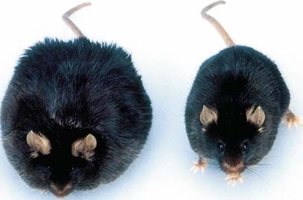
Procesamiento de alimentos y nutrición 1031
En niños pequeños, la desnutrición proteica grave resulta en una condición conocida como kwashiorkor . Esta palabra ashanti (de África occidental) signifi ca “primero-segundo”. Se refi ere a la situación en que una madre desteta a un primer niño cuando nace un hermano más pequeño. Luego, al primer niño se le proporciona una dieta con cereal rico en almidón o yuca, que es defi ciente en proteínas. El crecimiento se retrasa, los músculos se debilitan y se desarrolla edema (como se observa en el vientre infl amado); el niño se vuelve apático y anémico, con un deterioro del metabolismo ( FIGURA 47-16 ). Sin aminoácidos esenciales, no es posible elaborar las enzimas digestivas, de modo que lo poco de proteína que se ingiere no puede digerirse. Las defi ciencias en elementos traza y antioxidantes también se han relacionado con el desarrollo de kwashiorkor.
Repaso
■ Escriba una ecuación que describa el balance energético y explique lo que ocurre cuando la ecuación es modifi cada en cualquier dirección.
■ ¿Qué es el índice de masa corporal (IMC)?
■ ¿Cuál es la función de la grelina? ¿Y de la leptina?
FIGURA 47-16 Defi ciencia proteica Millones de niños padecen kwashiorkor, una enfermedad provocada por grave defi ciencia proteica. Observe el vientre hinchado, que resulta de un desbalance de fl uidos.
P. Pittet/United Nations Food and Agricultural Organization
47.1 (página 1013)
1 Describir el procesamiento de alimentos, que incluye la ingestión, digestión, absorción y egestión o eliminación, y comparar el sistema digestivo de un cnidario (como la hidra) con el de una lombriz de tierra y un vertebrado.
■ La nutrición es el proceso de tomar y usar alimentos. La alimentación es la selección, adquisición e ingestión de alimentos; es decir, tomar alimento en el cuerpo. La digestión es el proceso de desintegración mecánica y química de los alimentos. Los nutrientes pasan por el revestimiento del sistema digestivo y hacia el cuerpo por absorción . Los alimentos que no son digeridos y absorbidos son descargados del cuerpo por egestión o eliminación .
■ En cnidarios y platelmintos, los alimentos son digeridos en la cavidad gastrovascular. Ésta tiene una abertura que funciona como boca y ano. En invertebrados más complejos y en todos los vertebrados, el sistema digestivo es un tubo completo con una abertura en cada extremo. La digestión se lleva a cabo conforme los alimentos pasan por el tubo. Varias partes del sistema digestivo están especializadas en realizar funciones específi cas.
Aprenda más sobre los varios sistemas digestivos al hacer clic en la fi gura en CengageNOW.
47.2 (página 1016)
2 Seguir la vía que una carne ingerida recorre a través del sistema digestivo humano y describir la estructura y función de cada órgano implicado.
■ La digestión mecánica y enzimática de los carbohidratos comienza en la boca. Los dientes de los mamíferos incluyen incisivos , que están adaptados para morder y cortar alimentos; caninos, adaptados para desgarrar
alimentos; premolares y molares adaptados para aplastar y moler. Tres pares de glándulas salivales secretan saliva, que contiene la enzima amilasa salival que digiere el almidón.
■ Cuando el alimento es tragado, es impulsado a través de la faringe y el esófago . Un bolo alimenticio es desplazado a lo largo del sistema digestivo por peristalsis , ondas de contracción muscular que empujan a los alimentos.
■ En el estómago , los alimentos son digeridos mecánicamente por agitación vigorosa, y las proteínas son digeridas enzimáticamente por la acción de pepsina en el jugo gástrico. Los pliegues son dobleces de la pared estomacal que se expanden en la medida que el estómago se llena de alimentos. Las glándulas gástricas secretan ácido clorhídrico y pepsinógeno , el precursor de la pepsina.
■ Después de varias horas, una sopa de alimentos parcialmente digeridos, denominada quimo , sale del estómago a través del píloro y entra al intestino delgado en chorros. La mayor parte de la digestión enzimática se lleva a cabo en el duodeno , que produce varias enzimas digestivas y recibe secreciones del hígado y el páncreas.
■ El hígado produce bilis , que emulsiona las grasas. El páncreas libera enzimas que digieren carbohidratos, lípidos y proteínas, así como ARN y ADN. La amilasa pancreática digiere carbohidratos complejos. La lipasa pancreática degrada las grasas, y la tripsina y la quimiotripsina digieren polipéptidos en dipéptidos.
■ El intestino grueso , que consta del ciego , colon , recto y ano , es responsable de eliminar los desechos no digeridos. También incuba bacterias que producen vitamina K y ciertas vitaminas B.
Aprenda más sobre la digestión humana al hacer clic en la fi gura en CengageNOW.
■ ■ RESUMEN: ENFOQUE EN LOS OBJETIVOS DE APRENDIZAJE
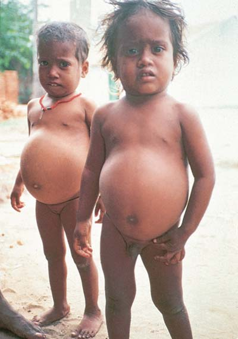
1032 Capítulo 47
que entra en el ciclo del ácido cítrico. El exceso de ácidos grasos es convertido en triacilglicerol y almacenado como grasa.
■ Los lípidos son transportados como grandes complejos moleculares denominados lipoproteínas . Las lipoproteínas de baja densidad (LBD) suministran colesterol a las células. Las lipoproteínas de alta densidad (LAD ) reúnen el exceso de colesterol y lo transportan al hígado.
■ Las proteínas sirven como enzimas y son componentes estructurales esenciales de las células. La mejor distribución de aminoácidos esenciales se encuentra en las proteínas completas de los alimentos de origen animal. El exceso de aminoácidos es desaminado por células en el hígado. Los grupos amino son convertidos en urea y excretados en la orina; los cetoácidos restantes son convertidos en carbohidratos y usados como combustible, o son transformados en lípidos y almacenados en células de grasa. 7 Describir las funciones nutricionales de las vitaminas, los minerales y los fi toquímicos.
■ Las vitaminas son compuestos orgánicos requeridos en pequeñas cantidades para muchos procesos bioquímicos. Muchas sirven como componentes de coenzimas. Las vitaminas solubles en grasa incluyen las vitaminas A, D, E y K. Las vitaminas solubles en agua son las vitaminas B y C.
■ Los minerales son nutrientes inorgánicos ingeridos como sales disueltas en alimentos y agua. Los elementos traza son minerales necesarios en cantidades menores a 100 mg al día.
■ Los fi toquímicos son compuestos vegetales que promueven la salud. Muchos fi toquímicos son antioxidantes que destruyen a los oxidantes , que son moléculas reactivas, como los radicales libres . Estas moléculas dañan al ADN, las proteínas y los ácidos grasos insaturados al arrebatarles electrones.
47.4 (página 1029)
8 Contrastar la tasa metabólica basal con la tasa metabólica total; escribir las ecuaciones básicas de energía para mantener el peso del cuerpo y describir las consecuencias de alterarlas en cualquier dirección.
■ La tasa metabólica basal (TMB) es el costo de la vida metabólica del cuerpo. La tasa metabólica total es la TMB más la energía usada para realizar las actividades diarias.
■ Cuando la entrada de energía (kilocalorías) es igual a la salida de energía, el peso del cuerpo permanece constante. Cuando la salida de energía es mayor que la entrada de energía, el peso del cuerpo disminuye. Cuando la entrada de energía excede a la salida de energía, el peso del cuerpo aumenta. 9 Identifi car los componentes de las vías regulatorias que median la ingesta de alimentos y la homeostasis energética.
■ La ingesta de alimentos y el metabolismo energético son regulados por vías complejas de moléculas de señalización.
■ La grelina y el neuropéptido Y (NPY) estimulan el apetito. El péptido YY, la colecistoquinina (CCK) y las melanocortinas señalan la saciedad.
■ La hormona leptina señala al cerebro sobre el estado de las reservas de energía en el tejido adiposo. La leptina y la insulina inhiben la ingesta de alimentos.
Aprenda más sobre las leptinas y el peso corporal al hacer clic en la fi gura en CengageNOW .
10 En términos generales, describir los efectos de la mala nutrición, incluyendo la sobrealimentación y la desnutrición.
■ En la obesidad , un exceso de grasa se acumula en los tejidos adiposos. La obesidad es un factor importante en varios trastornos graves, incluyendo enfermedad cardiaca y diabetes mellitus. Una persona gana peso al tomar más energía, en la forma de kilocalorías, de la que gasta en actividad. Los genes, las moléculas de señalización que afectan el metabolismo energético y ciertos comportamientos contribuyen a la obesidad.
■ Millones de personas padecen desnutrición, una forma de mala nutrición que provoca cansancio y función inmunológica deprimida. Los aminoácidos esenciales son los nutrientes que más a menudo son defi cientes en la dieta.
3 Seguir paso a paso la digestión de los carbohidratos, proteínas y lípidos.
■ Los nutrientes en el quimo son digeridos enzimáticamente cuando se mueven por el tracto digestivo. Los polisacáridos son digeridos en el disacárido maltosa por la amilasa salival y pancreática. La maltasa en el intestino delgado divide la maltosa en glucosa, el producto más importante de la digestión de carbohidratos.
■ Las proteínas son separadas por la pepsina en el estómago y por enzimas proteolíticas en el jugo pancreático. Las dipeptidasas dividen los péptidos pequeños en aminoácidos.
■ Los lípidos son emulsionados por las sales biliares y luego hidrolizadas por la lipasa pancreática. 4 Describir las adaptaciones estructurales que incrementan el área superfi cial del sistema digestivo.
■ El área superfi cial del intestino delgado se agranda bastante por los pliegues en su pared; por vellosidades intestinales, proyecciones alargadas de la mucosa; y por microvellosidades , proyecciones de la membrana plasmática de las células epiteliales de las vellosidades.
Vellosidades
5 Comparar la absorción de lípidos con la absorción de otros nutrientes.
■ Los nutrientes son absorbidos a través de las delgadas paredes de las vellosidades intestinales. La vena portal hepática transporta aminoácidos y glucosa al hígado.
■ Los ácidos grasos y monoacilgliceroles entran en las células epiteliales del revestimiento intestinal, donde vuelven a juntarse para formar triacilgliceroles. Son empacados en quilomicrones , gotas pequeñas que también contienen colesterol y fosfolípidos que están cubiertos por una capa de proteínas. El sistema linfático transporta los quilomicrones a la circulación sanguínea.
47.3 (página 1024)
6 Resumir los requerimientos nutricionales de carbohidratos dietéticos, lípidos y proteínas, y seguir el destino de la glucosa, los lípidos y los aminoácidos después de su absorción.
■ La mayoría de los carbohidratos son ingeridos en la forma de polisacáridos: almidón y celulosa. Los polisacáridos se conocen como carbohidratos complejos . La fi bra es principalmente una mezcla de celulosa y otros carbohidratos no digeribles. Los carbohidratos se usan principalmente como fuente de energía. La concentración de glucosa en la sangre es cuidadosamente regulada. El exceso de glucosa se almacena como glicógeno y también puede ser transformada en grasa.
■ Los lípidos se usan para proporcionar energía, formar componentes de membranas celulares y sintetizar hormonas esteroides y otras sustancias lipídicas. La mayoría de los lípidos son ingeridos en la forma de triacilgliceroles. Los ácidos grasos son convertidos en moléculas de acetil coenzima A,
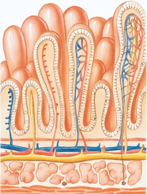
Procesamiento de alimentos y nutrición 1033
Los dientes adaptados para aplastar y moler son los (a) incisivos (b) caninos (c) premolares y molares (d) incisivos y premolares (e) caninos y molares
La capa de tejido que recubre el lumen del tracto digestivo es (a) la capa muscular (b) el peritoneo visceral (c) el peritoneo parietal (d) la mucosa (e) la submucosa
¿Cuáles de las siguientes son glándulas digestivas accesorias? (a) glándulas salivales (b) páncreas (c) hígado (d) a, b y c (e) a y b
Ordene los siguientes en la secuencia correcta. 1. estómago 2. esófago 3. faringe 4. intestino delgado 5. colon (a) 2, 3, 1, 4, 5 (b) 3, 2, 1, 5, 4 (c) 3, 2, 5, 1, 4 (d) 2, 3, 1, 5, 4 (e) 3, 2, 1, 4, 5
La amilasa es producida por (a) el páncreas y las glándulas salivales (b) el estómago y el páncreas (c) el colon y las glándulas salivales (d) el hígado y el páncreas (e) el duodeno y el páncreas
¿Qué secuencia describe con más precisión la digestión de proteínas? 1. dipéptido 2. aminoácido 3. proteína 4. polipéptido 5. glicerol (a) 4, 3, 1, 2 (b) 3, 4, 1, 2 (c) 3, 4, 1, 5 (d) 4, 3, 5, 1, 2 (e) 2, 1, 4, 5
El área superfi cial del intestino delgado es incrementada por (a) pliegues en su pared (b) vellosidades (c) microvellosidades (d) a, b y c (e) a y b
Los lípidos son transportados del intestino al hígado por (a) quilomicrones (b) LAD (c) LBD (d) transportadores de glicerol (e) leptina
La mayoría de las vitaminas son (a) compuestos inorgánicos (b) componentes de coenzimas (c) usadas como combustible (d) electrolitos (e) requeridas por herbívoros y carnívoros pero no por omnívoros
Cuando la entrada de energía es mayor que la salida de energía, (a) ocurre pérdida de peso (b) el peso permanece estable (c) ocurre ganancia de peso (d) se inhibe la secreción de leptina (e) se desactiva el gen ob
Una hormona que estimula a las glándulas gástricas para secretar pepsinógeno es la (a) secretina (b) GIP (c) gastrina (d) colecistoquinina (CCK) (e) sustancia P
Rotule la fi gura. Use la fi gura 47-4 para comprobar sus respuestas.
EVALÚE SU COMPRENSIÓN
Diseñe un experimento para probar la hipótesis de que la vitamina B piridoxina es un nutriente esencial para los ratones.
Las enzimas proteolíticas son producidas en una forma inactiva. ¿Qué benefi cio, de haber alguno, podría tener este hecho?
VÍNCULO CON LA EVOLUCIÓN . Si usted encontrase un animal desconocido y se le pidiera determinar su estilo de vida nutricional, ¿qué haría? ( Sugerencia : considere las adaptaciones).
CIENCIA, TECNOLOGÍA Y SOCIEDAD . Los investigadores están desentrañando las vías bioquímicas que ayudan a regular el peso corporal. ¿Cómo podría llevar su trabajo a una cura para la obesidad? ¿De qué manera podría afectar a la sociedad una cura para la obesidad?
Preguntas adicionales están disponibles en CengageNOW en www.cengage.com/login.
PENSAMIENTO CRÍTICO
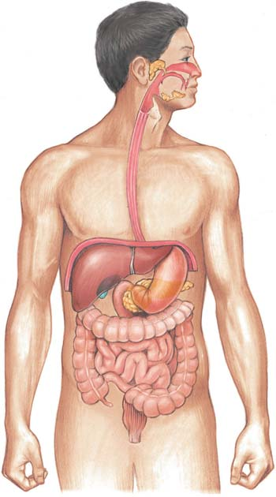